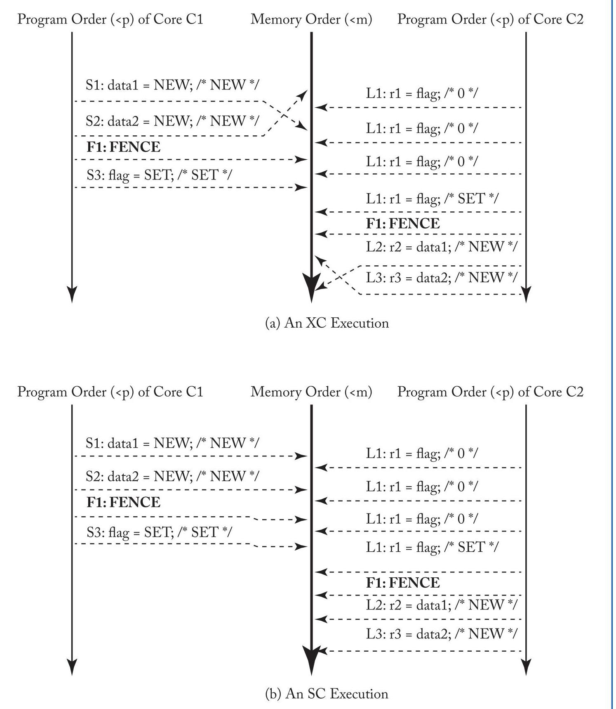
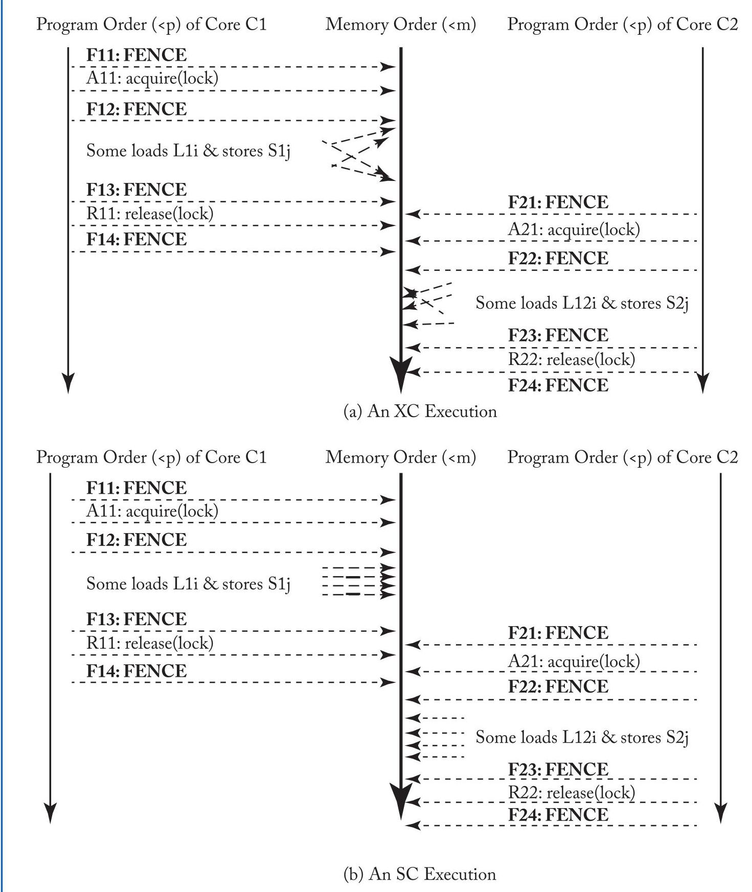
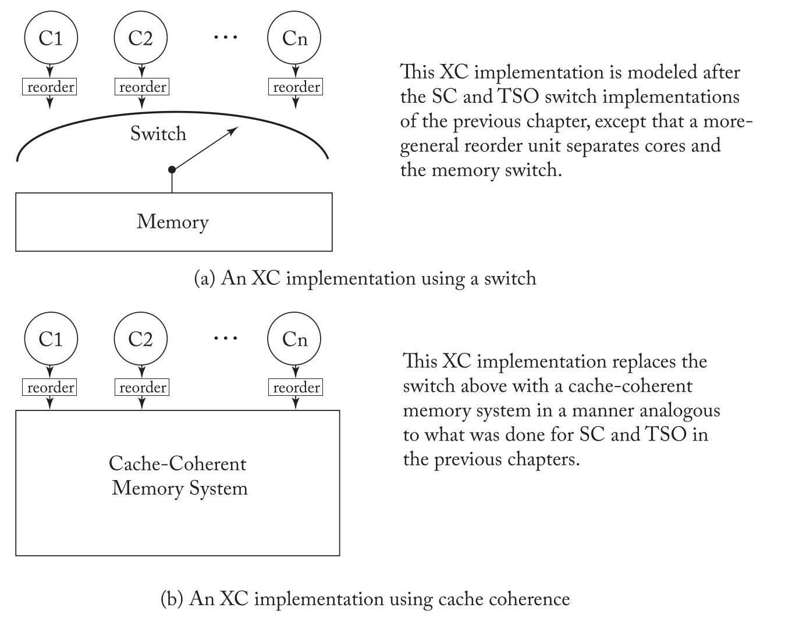
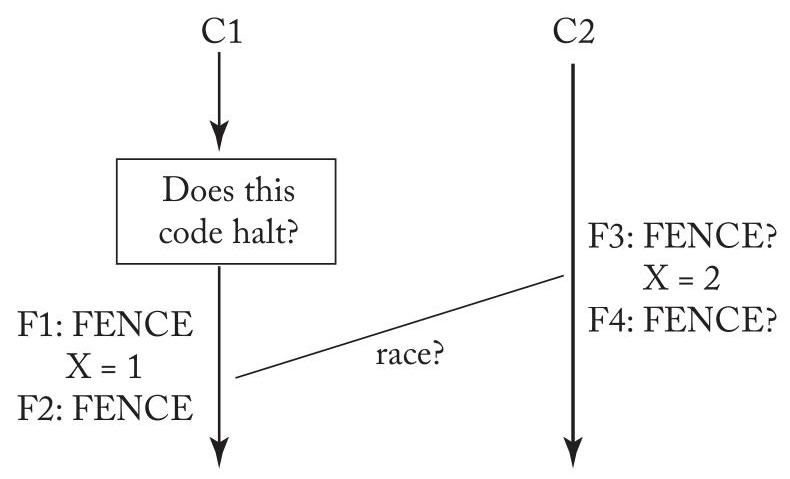
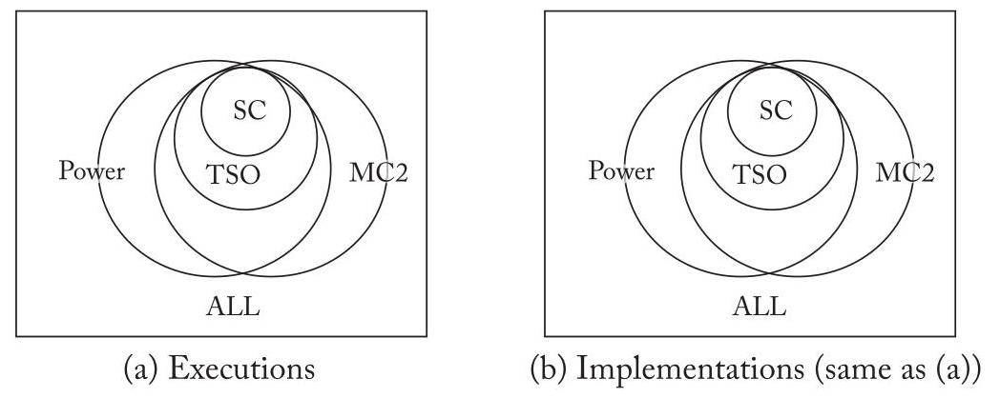
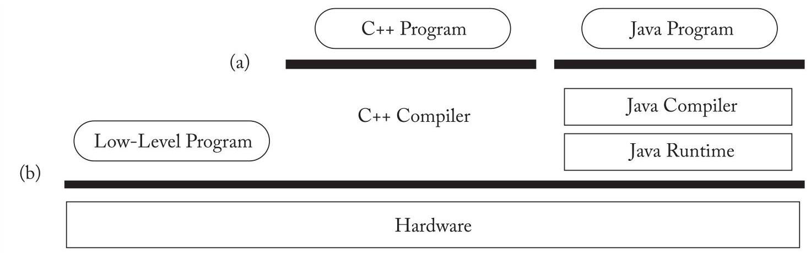
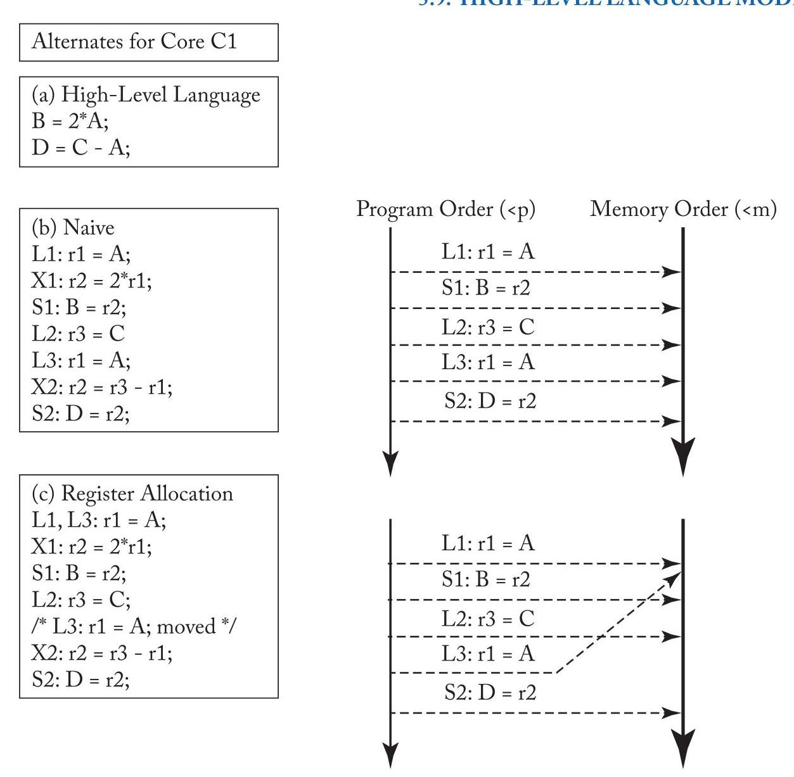

U5 translated
CHAPTER 5 Relaxed Memory Consistency
The previous two chapters explored the memory consistency models sequential consistency (SC) and total store order (TSO). These chapters presented SC as intuitive and TSO as widely implemented (e.g., in x86). Both models are sometimes called strong because the global memory order of each model usually respects (preserves) per-thread program order. Recall that SC preserves order for two memory operations from the same thread for all four combinations of loads and stores (Load \(\rightarrow\) Load, Load \(\rightarrow\) Store, Store \(\rightarrow\) Store, and Store \(\rightarrow\) Load), whereas TSO preserves the first three orders but not Store \(\rightarrow\) Load order.
前两章探讨了内存一致性模型：顺序一致性（sequential consistency, SC）和全存储排序（total store order, TSO）。这些章节将 SC 描述为直观易懂，而 TSO 则被广泛实现（例如在 x86 中）。这两种模型有时被称为强模型（strong），因为每种模型的全局内存顺序通常尊重（保留）每个线程的程序顺序。回顾一下，SC 为来自同一线程的两个内存操作保留了加载和存储所有四种组合的顺序（加载 \(\rightarrow\) 加载，加载 \(\rightarrow\) 存储，存储 \(\rightarrow\) 存储，以及存储 \(\rightarrow\) 加载），而 TSO 保留了前三种顺序，但不保留存储 \(\rightarrow\) 加载的顺序。
This chapter examines more relaxed (weak) memory consistency models that seek to preserve only the orders that programmers "require." The principal benefit of this approach is that mandating fewer ordering constraints can facilitate higher performance by allowing more hardware and software (compiler and runtime system) optimizations. The principal drawbacks are that relaxed models must formalize when ordering is "required" and provide mechanisms for programmers or low-level software to communicate such ordering to implementations, and vendors have failed to agree on a single relaxed model, compromising portability.
本章将探讨更宽松的（弱）内存一致性模型，这类模型旨在仅保留程序员“所必需”的顺序。这种方法的主要优势在于，通过减少强制性的顺序约束，可以为硬件和软件（编译器及运行时系统）提供更多优化空间，从而提升性能。其主要缺点则包括：宽松模型必须明确界定何时“必需”某种顺序，并需提供相应机制，以便程序员或底层软件向具体实现传达这种顺序需求；此外，各厂商至今未能就单一宽松模型达成共识，从而损害了程序的可移植性。
A full exploration of relaxed consistency models is beyond the scope of this chapter. This chapter is instead a primer that seeks to provide the basic intuition and help make the reader aware of the limits of a simple understanding of these models. In particular, we provide motivation for relaxed models (Section 5.1), present and formalize an example relaxed consistency model XC (Section 5.2), discuss the implementation of XC, including atomic instructions and instructions used to enforce ordering (Section 5.3), introduce sequential consistency for data-race-free programs (Section 5.4), present additional relaxed model concepts (Section 5.5), present the RISC-V and IBM Power memory model case studies (Section 5.6), point to further reading and other commercial models (Section 5.7), compare models (Section 5.8), and touch upon high-level-language memory models (Section 5.9).
对松弛一致性模型 (relaxed consistency models) 的全面探讨超出了本章的范围。本章作为入门读物 (primer)，旨在提供基本的直觉，并帮助读者认识到对这些模型的简单理解的局限性。具体而言，我们提供松弛模型的动机 (motivation for relaxed models)（第5.1节），展示并形式化一个示例松弛一致性模型 XC（第5.2节），讨论 XC 的实现，包括原子指令 (atomic instructions) 和用于强制排序的指令 (instructions used to enforce ordering)（第5.3节），介绍无数据竞争程序的顺序一致性 (sequential consistency for data-race-free programs)（第5.4节），展示额外的松弛模型概念 (additional relaxed model concepts)（第5.5节），展示 RISC-V 和 IBM Power 内存模型案例研究 (RISC-V and IBM Power memory model case studies)（第5.6节），指出延伸阅读和其他商业模型 (further reading and other commercial models)（第5.7节），比较模型 (compare models)（第5.8节），并简要涉及高级语言内存模型 (high-level-language memory models)（第5.9节）。
5.1 MOTIVATION
As we will soon see, mastering relaxed consistency models can be more challenging than understanding SC and TSO. These drawbacks beg the question: why bother with relaxed models at all? In this section, we motivate relaxed models, first by showing some common situations in which programmers do not care about instruction ordering (Section 5.1.1) and then by discussing a few of the optimizations that can be exploited when unnecessary orderings are not enforced (Section 5.1.2).
正如我们即将看到的，掌握松弛一致性模型 (relaxed consistency models) 可能比理解 SC 和 TSO 更具挑战性。这些缺点不免引出一个问题：究竟为什么要费心使用松弛模型？在本节中，我们将阐述使用松弛模型的动机，首先展示一些程序员不关心指令排序 (instruction ordering) 的常见情况（第 5.1.1 节），然后讨论当不必要的排序不被强制执行时，可以利用的一些优化 (optimizations)（第 5.1.2 节）。
56 5. RELAXED MEMORY CONSISTENCY
56 5. 放松内存一致性 (RELAXED MEMORY CONSISTENCY)
5.1.1 OPPORTUNITIES TO REORDER MEMORY OPERATIONS
Consider the example depicted in Table 5.1. Most programmers would expect that r2 will always get the value NEW because S1 is before S3 and S3 is before the dynamic instance of L1 that loads the value SET, which is before L2. We can denote this:
考虑表5.1中描绘的例子。大多数程序员会期望r2总是得到值NEW，因为S1在S3之前，并且S3在加载值SET的L1的动态实例（dynamic instance）之前，而该动态实例又在L2之前。我们可以这样表示：
- S1 → S3 → L1 loads SET → L2.
- S1 → S3 → L1 加载 SET → L2。
Similarly, most programmers would expect that r3 will always get the value NEW because:
同样地，大多数程序员会期望 r3 始终得到值 NEW，因为：
- \(\mathrm{S}2 \rightarrow \mathrm{S}3 \rightarrow \mathrm{L}1\) loads SET \(\rightarrow \mathrm{L}3\) .
- \(\mathrm{S}2 \rightarrow \mathrm{S}3 \rightarrow \mathrm{L}1\) 加载设置 (SET) \(\rightarrow \mathrm{L}3\) .
In addition to these two expected orders above, \(\mathrm{{SC}}\) and TSO also require the orders \(\mathrm{S}1 \rightarrow\) S2 and L2 \(\rightarrow\) L3. Preserving these additional orders may limit implementation optimizations to aid performance, yet these additional orders are not needed by the program for correct operation.
除了前述两种预期的顺序外，\(\mathrm{{SC}}\) 与 TSO 还需额外满足 \(\mathrm{S}1 \rightarrow\) S2 与 L2 \(\rightarrow\) L3 的顺序约束。保留这些额外顺序可能限制实现层面的优化（implementation optimizations）以提升性能，但程序本身并不需要这些额外顺序来保证正确运行（correct operation）。
Table 5.2 depicts a more general case of the handoff between two critical sections using the same lock. Assume that hardware supports lock acquire (e.g., with test-and-set doing a read-modify-write and looping until it succeeds) and lock release (e.g., store the value 0). Let core C1 acquire the lock, do critical section 1 with an arbitrary interleaving of loads (L1i) and stores (S1j), and then release the lock. Similarly, let core C2 do critical section 2, including an arbitrary interleaving of loads (L2i) and stores (S2j).
表5.2描述了使用同一锁的两个临界区之间传递的更一般情况。假设硬件支持锁获取（例如，使用测试并置位（test-and-set）进行读-修改-写（read-modify-write）操作并循环直到成功）和锁释放（例如，存储值0）。让核心C1获取锁，执行临界区1，其中包含任意交错的加载（L1i）和存储（S1j），然后释放锁。类似地，让核心C2执行临界区2，包含任意交错的加载（L2i）和存储（S2j）。
Proper operation of the handoff from critical section 1 to critical section 2 depends on the order of these operations:
从临界区 1 到临界区 2 的交接（handoff）正确操作取决于这些操作的顺序：
\[ \text{ - 所有 L1i, 所有 S1j } \rightarrow \mathrm{R}1 \rightarrow \mathrm{A}2 \rightarrow \mathrm{{所有}}\mathrm{L}2\mathrm{i}\text{ , 所有 S2j, } \]
where commas (",") separate operations whose order is not specified.
其中逗号（“,”）分隔未指定顺序的操作。
Proper operation does not depend on any ordering of the loads and stores within each critical section—unless the operations are to the same address (in which case ordering is required to maintain sequential processor ordering). That is:
正确的操作并不依赖于每个临界区（critical section）内加载（load）和存储（store）操作的任何特定顺序——除非这些操作针对同一地址（此种情况下，需要保持顺序以维护顺序处理器排序（sequential processor ordering））。也就是说：
- All L1i and S1j can be in any order with respect to each other, and
- 所有 L1i 和 S1j 可以以任意顺序相互排列，并且
Table 5.1: What order ensures r2 and r3 always get NEW?
表 5.1：何种顺序能确保 r2 与 r3 总是得到 NEW？
| Core C1 | Core C2 | Comments |
| S1: data1 = NEW; S2: data2 = NEW; S3: flag = SET; | L1: r1 = flag B1: if (r1 ≠ SET) goto L1; L2: r2=data1; L3: r3=data2; | /* Initially, data1 and data2 = 0 & flag ≠ SET */ /* spin loop: L1 & B1 may repeat many times */ |
Table 5.2: What order ensures correct handoff from critical section 1 to 2?
表 5.2：哪种顺序能确保从临界区 (critical section) 1 到 2 的正确交接 (handoff)？
| Core C1 | Core C2 | Comments |
| A1: acquire(lock) /* Begin Critical Section 1 */ Some loads L1i interleaved with some stores S1j /* End Critical Section 1 */ R1: release(lock) | A2: acquire(lock) /* Begin Critical Section 2 */ Some loads L2i interleaved with some stores S2j /* End Critical Section 2 */ R2: release(lock) | /* Arbitrary interleaving of L1i's & S1j's */ /* Handoff from critical section 1 */ /* To critical section 2 */ /* Arbitrary interleaving of L2i's & S2j's */ |
- All L2i and S2j can be in any order with respect to each other.
- 所有 L2i 与 S2j 相互之间可以以任意顺序排列。
If proper operation does not depend on ordering among many loads and stores, perhaps one could obtain higher performance by relaxing the order among them, since loads and stores are typically much more frequent than lock acquires and releases. This is what relaxed or weak models do.
如果正确操作不依赖于众多加载 (load) 和存储 (store) 之间的顺序，也许可以通过放宽它们之间的顺序来获得更高的性能，因为加载和存储通常比锁获取 (lock acquire) 和释放 (release) 频繁得多。这就是宽松 (relaxed) 或弱 (weak) 模型所做的。
5.1.2 OPPORTUNITIES TO EXPLOIT REORDERING
Assume for now a relaxed memory consistency model that allows us to reorder any memory operations unless there is a FENCE between them. This relaxed model forces the programmer to reason about which operations need to be ordered, which is a drawback, but it also enables many optimizations that can improve performance. We discuss a few common and important optimizations, but a deep treatment of this topic is beyond the scope of this primer.
目前假设一种宽松的内存一致性模型 (relaxed memory consistency model)，该模型允许我们对任何内存操作进行重排序，除非它们之间有FENCE指令。这种宽松模型迫使程序员考虑哪些操作需要被排序，这是一个缺点，但也启用了许多可以提高性能的优化。我们将讨论一些常见且重要的优化，但对该主题的深入探讨超出了本入门指南的范围。
Non-FIFO, Coalescing Write Buffer
Recall that TSO enables the use of a FIFO write buffer, which improves performance by hiding some or all of the latency of committed stores. Although a FIFO write buffer improves performance, an even more optimized design would use a non-FIFO write buffer that permits coalescing of writes (i.e., two stores that are not consecutive in program order can write to the same entry in the write buffer). However, a non-FIFO coalescing write buffer normally violates TSO because TSO requires stores to appear in program order. Our example relaxed model allows stores to coalesce in a non-FIFO write buffer, so long as the stores have not been separated by a FENCE.
回想一下，全存储定序（TSO）允许使用先进先出（FIFO）写缓冲区，这通过隐藏已提交存储的部分或全部延迟来提高性能。尽管先进先出（FIFO）写缓冲区能提高性能，但更优化的设计会使用非先进先出（non-FIFO）写缓冲区，该缓冲区允许写合并（coalescing of writes）（即，程序顺序上不连续的两个存储可以写入写缓冲区中的同一表项）。然而，非先进先出（non-FIFO）合并写缓冲区通常会违反全存储定序（TSO），因为TSO要求存储按程序顺序出现。我们的示例宽松模型允许在非先进先出（non-FIFO）写缓冲区中进行存储合并，只要这些存储未被内存屏障（FENCE）分隔开。
58 5. RELAXED MEMORY CONSISTENCY
Simpler Support for Core Speculation
In systems with strong consistency models, a core may speculatively execute loads out of program order before they are ready to be committed. Recall how the MIPS R10000 core, which supports SC, used such speculation to gain better performance than a naive implementation that did not speculate. The catch, however, is that speculative cores that support SC typically have to include mechanisms to check whether the speculation is correct, even if mis-speculations are rare [15, 21]. The R10000 checks speculation by comparing the addresses of evicted cache blocks against a list of the addresses that the core has speculatively loaded but not yet committed (i.e., the contents of the core's load queue). This mechanism adds to the cost and complexity of the hardware, it consumes additional power, and it represents another finite resource that may constrain instruction level parallelism. In a system with a relaxed memory consistency model, a core can execute loads out of program order without having to compare the addresses of these loads to the addresses of incoming coherence requests. These loads are not speculative with respect to the relaxed consistency model (although they may be speculative with respect to, say, a branch prediction or earlier stores by the same thread to the same address).
在具有强一致性模型（strong consistency models）的系统中，核心（core）可能会在加载指令（loads）准备好提交（committed）之前，以乱序（out of program order）方式投机执行（speculatively execute）这些加载指令。回想一下支持顺序一致性（SC，Sequential Consistency）的MIPS R10000核心，是如何利用这种投机来获得比不做投机的朴素实现（naive implementation）更好的性能。然而，问题在于，支持SC的投机核心通常必须包含检查投机是否正确的机制，即使误投机（mis-speculations）很少发生[15, 21]。R10000通过将被逐出缓存块（evicted cache blocks）的地址与核心已投机加载但尚未提交的地址列表（即核心的加载队列（load queue）的内容）进行比较，来检查投机。这种机制增加了硬件的成本与复杂度，消耗了额外的功耗，并且它构成了另一种可能约束指令级并行（instruction level parallelism）的有限资源（finite resource）。在具有宽松内存一致性模型（relaxed memory consistency model）的系统中，核心可以乱序执行加载指令，而无需将这些加载的地址与传入的一致性请求（incoming coherence requests）的地址进行比较。相对于宽松一致性模型，这些加载指令并非投机的（尽管它们可能相对于例如分支预测（branch prediction）或同一线程对同一地址的先前存储指令（stores）而言是投机的）。
Coupling Consistency and Coherence
We previously advocated decoupling consistency and coherence to manage intellectual complexity. Alternatively, relaxed models can provide better performance than strong models by "opening the coherence box." For example, an implementation might allow a subset of cores to load the new value from a store even as the rest of the cores can still load the old value, temporarily breaking coherence's single-writer-multiple-reader invariant. This situation can occur, for example, when two thread contexts logically share a per-core write buffer or when two cores share an L1 data cache. However, "opening the coherence box" incurs considerable intellectual and verification complexity, bringing to mind the Greek myth about Pandora's box. As we will discuss in Section 5.6.2, IBM Power permits the above optimizations. We will also explore in Chapter 10 why and how GPUs and heterogeneous processors typically open the coherence box while enforcing consistency. But first we explore relaxed models with the coherence box sealed tightly.
我们此前曾主张解耦一致性 (consistency) 与缓存一致性 (coherence) 以管理认知复杂度。另一方面，宽松模型 (relaxed models) 可以通过“打开一致性盒” (opening the coherence box) 而比强模型 (strong models) 提供更优的性能。例如，一种实现可能允许一部分核心从一个存储 (store) 中加载新值，而其余核心仍能加载旧值，从而暂时打破缓存一致性 (coherence) 的单写者多读者不变式 (single-writer-multiple-reader invariant)。这种情况可能发生，例如当两个线程上下文逻辑上共享一个每核写缓冲 (per-core write buffer) 时，或者当两个核心共享一个 L1 数据缓存 (L1 data cache) 时。然而，“打开一致性盒”会带来相当大的认知与验证复杂度，令人联想到希腊神话中潘多拉魔盒 (Pandora's box) 的故事。正如我们将在第 5.6.2 节讨论的，IBM Power 允许上述优化。我们还将在第 10 章探讨为什么图形处理器 (GPUs) 和异构处理器 (heterogeneous processors) 通常会在强制执行一致性的同时打开一致性盒。但首先，我们探讨在一致性盒被紧紧密封的情况下的宽松模型。
5.2 AN EXAMPLE RELAXED CONSISTENCY MODEL (XC)
For teaching purposes, this section introduces an eXample relaxed Consistency model (XC) that captures the basic idea and some implementation potential of relaxed memory consistency models. XC assumes that a global memory order exists, as is true for the strong models of SC and TSO, as well as the largely defunct relaxed models for Alpha [33] and SPARC Relaxed Memory Order (RMO) [34].
为了教学目的，本节引入了一个示例宽松一致性模型（eXample relaxed Consistency model，XC），它捕捉了宽松内存一致性模型的基本思想和一些实现潜力。XC 假设存在全局内存顺序（global memory order），正如顺序一致性（SC）和全存储排序（TSO）这两种强模型，以及已基本废弃的针对 Alpha [33] 和 SPARC 宽松内存排序（Relaxed Memory Order，RMO）[34] 的宽松模型一样。
5.2.1 THE BASIC IDEA OF THE XC MODEL
XC provides a FENCE instruction so that programmers can indicate when order is needed; otherwise, by default, loads and stores are unordered. Other relaxed consistency models call a FENCE a barrier, a memory barrier, a membar, or a sync. Let core Ci execute some loads and/or stores, Xi, then a FENCE instruction, and then some more loads and/or stores, Yi. The FENCE ensures that memory order will order all Xi operations before the FENCE, which in turn is before all Yi operations. A FENCE instruction does not specify an address. Two FENCEs by the same core also stay ordered. However, a FENCE does not affect the order of memory operations at other cores (which is why "fence" may be a better name than "barrier"). Some architectures include multiple FENCE instructions with different ordering properties; for example, an architecture could include a FENCE instruction that enforces all orders except from a store to a subsequent load. In this chapter, however, we consider only FENCEs that order all types of operations.
XC提供一条栅栏指令（FENCE instruction），使得程序员可以指示何时需要顺序；否则，默认情况下，加载和存储操作（loads and stores）是无序的。其他宽松一致性模型（relaxed consistency model）将栅栏指令称为屏障（barrier）、内存屏障（memory barrier）、membar或同步（sync）。设核心 Ci 执行一些加载和/或存储操作 Xi，然后一条栅栏指令，接着再执行一些加载和/或存储操作 Yi。该栅栏指令确保内存顺序（memory order）会将所有 Xi 操作排在栅栏指令之前，而栅栏指令又在所有 Yi 操作之前。一条栅栏指令不指定地址。同一核心发出的两条栅栏指令也保持有序。然而，栅栏指令不影响其他核心上内存操作（memory operation）的顺序（这也是“栅栏（fence）”可能比“屏障（barrier）”更好的原因）。一些架构包含多条具有不同排序属性的栅栏指令；例如，某架构可能包含一条栅栏指令，该指令强制执行除存储（store）到后续加载（load）顺序之外的所有顺序。然而，在本章中，我们只考虑对所有类型操作进行排序的栅栏指令。
XC's memory order is guaranteed to respect (preserve) program order for:
XC 的内存顺序保证为以下情况遵守（保留）程序顺序：
- Load \(\rightarrow\) FENCE
- 加载 (Load) \(\rightarrow\) 屏障 (FENCE)
- Store \(\rightarrow\) FENCE
- 存储 (Store) \(\rightarrow\) 栅栏 (FENCE)
- FENCE \(\rightarrow\) FENCE
- FENCE \(\rightarrow\) FENCE
- FENCE \(\rightarrow\) Load
- 内存屏障 (FENCE) \(\rightarrow\) 加载 (Load)
- FENCE \(\rightarrow\) Store
- FENCE（围栏）\(\rightarrow\) Store（存储）
XC maintains TSO rules for ordering two accesses to the same address only:
XC 仅针对同一地址的两个访问维持全序存储（Total Store Order，TSO）排序规则：
- Load \(\rightarrow\) Load to same address
- 加载 (Load) \(\rightarrow\) 加载到相同地址
- Load \(\rightarrow\) Store to the same address
- 加载 (Load) \(\rightarrow\) 存储 (Store) 到同一地址
- Store \(\rightarrow\) Store to the same address
- 存储 (Store) \(\rightarrow\) 存储到同一地址
These rules enforce the sequential processor model (i.e., sequential core semantics) and prohibit behaviors that might astonish programmers. For example, the Store \(\rightarrow\) Store rule prevents a critical section that performs "A = 1" then "A = 2" from completing strangely with A set to 1. Likewise, the Load \(\rightarrow\) Load rule ensures that if B was initially 0 and another thread performs "B = 1," then the present thread cannot perform "r1 = B" then "r2 = B" with r1 getting 1 and r2 getting 0 , as if B's value went from new to old.
这些规则强制执行顺序处理器模型（sequential processor model）（即顺序核心语义，sequential core semantics），并禁止可能让程序员感到惊讶的行为。例如，Store \(\rightarrow\) Store规则可防止执行“A = 1”然后“A = 2”的临界区（critical section）奇怪地以A被设置为1而结束。同样，Load \(\rightarrow\) Load规则确保，如果B最初为0且另一个线程执行“B = 1”，那么当前线程不能执行“r1 = B”然后“r2 = B”，使得r1得到1而r2得到0，就好像B的值从新变回了旧。
XC ensures that loads immediately see updates due to their own stores (like TSO's write buffer bypassing). This rule preserves the sequentiality of single threads, also to avoid programmer astonishment.
XC 确保加载 (load) 能立即看到由它们自己的存储 (store) 所产生的更新（类似全序存储 (TSO) 的写缓冲区旁路 (write buffer bypassing)）。这条规则保留了单线程的顺序性 (sequentiality)，也为了避免编程人员惊讶 (programmer astonishment)。
60 5. RELAXED MEMORY CONSISTENCY
60 5. 宽松的内存一致性 (RELAXED MEMORY CONSISTENCY)
5.2.2 EXAMPLES USING FENCES UNDER XC
Table 5.3 shows how programmers or low-level software should insert FENCEs in the program of Table 5.1 so that it operates correctly under XC. These FENCEs ensure:
表 5.3 展示了程序员或底层软件应如何在表 5.1 的程序中插入内存屏障（FENCE），使其在 XC 模型下正确运行。这些内存屏障确保：
\[ \text{ - S1, }\mathrm{S}2 \rightarrow \mathrm{F}1 \rightarrow \mathrm{S}3 \rightarrow \mathrm{L}1\text{ 加载 }\mathrm{{SET}} \rightarrow \mathrm{F}2 \rightarrow \mathrm{L}2,\mathrm{L}3\text{。 } \]
The F1 FENCE, which orders stores, makes sense to most readers, but some are surprised by the need for the F2 FENCE ordering loads. However, if one allows the loads to execute out of order, they can make it look like in-order stores executed out of order. For example, if execution can proceed as L2, S1, S2, S3, L1, and L3, then L2 can obtain the value 0 . This result is especially possible for a program that does not include the B1 control dependence, so that L1 and L2 are consecutive loads to different addresses, wherein reordering seems reasonable, but is not.
F1 屏障 (F1 FENCE) 用于对存储操作 (stores) 进行排序，这大多数读者都能理解，但有人对需要 F2 屏障 (F2 FENCE) 来对加载操作 (loads) 进行排序感到惊讶。然而，如果允许加载操作乱序 (out of order) 执行，它们可能使顺序执行的存储操作 (in-order stores) 看起来像是乱序执行的。例如，如果执行可以按 L2、S1、S2、S3、L1、L3 的顺序进行，那么 L2 可能获得值 0。这种结果尤其可能出现在未包含 B1 控制依赖 (B1 control dependence) 的程序中，使得 L1 和 L2 成为对不同地址的连续加载操作，这种情况下重排序似乎合理，但实际上并不合理。
Table 5.3: Adding FENCEs for XC to Table 5.1's program
表5.3：为表5.1的程序添加用于XC模型（XC）的内存屏障指令（FENCEs）
| Core C1 | Core C2 | Comments |
| S1: data1 = NEW; S2: data2 = NEW; F1: FENCE S3: flag = SET; | L1: r1 = flag; B1: if (r1≠ SET) goto L1; F2: FENCE L2: r2 = data1; L3: r3 = data2; | /* Initially, data1 & data2 = 0 & flag ≠ SET */ /* L1 & B1 may repeat many times */ |
Table 5.4 shows how programmers or low-level software could insert FENCEs in the critical section program of Table 5.2 so that it operates correctly under XC. This FENCE insertion policy, in which FENCEs surround each lock acquire and lock release, is conservative for illustration purposes; we will later show that some of these FENCEs can be removed. In particular, FENCEs F13 and F22 ensure a correct handoff between critical sections because:
表 5.4 展示了程序员或底层软件如何在表 5.2 的临界区程序中插入 FENCE（内存屏障），使其在 XC 下正确运行。这种在每个锁获取和锁释放周围都插入 FENCE 的保守策略仅为说明目的；我们稍后将展示其中一些 FENCE 可以移除。特别地，FENCE F13 和 F22 确保了临界区之间的正确交接，因为：
\[ \text{ - 所有 L1i，所有 S1j } \rightarrow \mathbf{{F13}} \rightarrow \mathrm{{R11}} \rightarrow \mathrm{{A21}} \rightarrow \mathrm{{F22}} \rightarrow \text{ 所有 L2i，所有 S2j } \]
Next, we formalize XC and then show why the above two examples work.
接下来，我们形式化 XC，然后说明为什么上述两个例子有效。
5.2.3 FORMALIZING XC
Here, we formalize XC in a manner consistent with the previous two chapters' notation and approach. Once again, let L(a) and S(a) represent a load and a store, respectively, to address a. Orders \(< \mathrm{p}\) and \(< \mathrm{m}\) define per-processor program order and global memory order, respectively.
这里，我们以与前两章符号和方法一致的方式形式化XC。再次，令L(a)和S(a)分别表示对地址a的加载（load）和存储（store）。顺序\(< \mathrm{p}\)和\(< \mathrm{m}\)分别定义了每个处理器的程序顺序（per-processor program order）和全局内存顺序（global memory order）。
5.2. AN EXAMPLE RELAXED CONSISTENCY MODEL (XC) 61
5.2. 松弛一致性模型示例 (XC) 61
Table 5.4: Adding FENCEs for XC to Table 5.2's critical section program. (Note that not all FENCES are strictly necessary for correctness.)
表 5.4：为表 5.2 的临界区程序添加针对 XC 的 FENCE 指令。（注意，并非所有 FENCE 对于正确性都是严格必需的。）
| Core C1 | Core C2 | Comments |
| F11: FENCE A11: acquire(lock) F12: FENCE Some loads L1i interleaved with some stores S1j F13: FENCE R11: release(lock) F14: FENCE | F21: FENCE A21: acquire(lock) F22: FENCE Some loads L2i interleaved with some stores S2j F23: FENCE R22: release(lock) F24: FENCE | /* Arbitrary interleaving of L1i's & S1j's */ /* Handoff from critical section 1 */ /* To critical section 2 */ /* Arbitrary interleaving of L2i’s & S2j’s */ |
Program order \(< \mathrm{p}\) is a per-processor total order that captures the order in which each core logically (sequentially) executes memory operations. Global memory order \(< \mathrm{m}\) is a total order on the memory operations of all cores.
程序顺序 (Program order) \(< \mathrm{p}\) 是一种针对每个处理器的全序，它记录了每个核心逻辑上（顺序地）执行内存操作的顺序。全局内存顺序 (Global memory order) \(< \mathrm{m}\) 是对所有核心的内存操作的一个全序。
More formally, an XC execution requires the following.
更正式地说，XC 执行需要满足以下条件。
- All cores insert their loads, stores, and FENCEs into the order <m respecting:
- 所有核心将其加载、存储和内存屏障 (FENCE) 插入到顺序 <m 中，遵守：
- If L(a) <p FENCE \(\Rightarrow\) L(a) <m FENCE / Load → FENCE /
- 如果 L(a) <p FENCE \(\Rightarrow\) L(a) <m FENCE / 加载 → 内存屏障 (FENCE) /
- If S(a) <p FENCE \(\Rightarrow\) S(a) <m FENCE
- 如果 S(a) <p FENCE \(\Rightarrow\) S(a) <m FENCE
- If FENCE \(< p\) FENCE \(\Rightarrow\) FENCE \(< m\) FENCE \(/{}^{ * }\) FENCE \(\rightarrow\) FENCE \({}^{ * }/\)
- 如果 栅栏 (FENCE) \(< p\) 栅栏 \(\Rightarrow\) 栅栏 \(< m\) 栅栏 \(/{}^{ * }\) 栅栏 \(\rightarrow\) 栅栏 \({}^{ * }/\)
- If FENCE <p L(a) \(\Rightarrow\) FENCE <m L(a) / FENCE → Load /
- 如果栅栏（FENCE） <p L(a) \(\Rightarrow\) 栅栏（FENCE） <m L(a) / 栅栏（FENCE） → 加载（Load） /
- If FENCE <p S(a) \(\Rightarrow\) FENCE <m S(a) / FENCE \(\rightarrow\) Store /
- 若 FENCE <p S(a) \(\Rightarrow\) FENCE <m S(a) / FENCE \(\rightarrow\) 存储 /
- All cores insert their loads and stores to the same address into the order \(< \mathrm{m}\) respecting:
- 所有核心将其对同一地址的加载 (load) 和存储 (store) 操作按顺序 \(< \mathrm{m}\) 插入，并遵守：
- If L(a) \(< p{\mathrm{\;L}}^{\prime }\left( \mathrm{a}\right) \Rightarrow \mathrm{L}\left( \mathrm{a}\right) < \mathrm{m}{\mathrm{L}}^{\prime }\left( \mathrm{a}\right)\) / Load \(\rightarrow\) Load to same address /
- 如果 L(a) \(< p{\mathrm{\;L}}^{\prime }\left( \mathrm{a}\right) \Rightarrow \mathrm{L}\left( \mathrm{a}\right) < \mathrm{m}{\mathrm{L}}^{\prime }\left( \mathrm{a}\right)\) / 加载 (Load) \(\rightarrow\) 加载到相同地址 (Load to same address) /
- If \(L\left( a\right) < p\;S\left( a\right) \Rightarrow L\left( a\right) < {mS}\left( a\right)\) / Load → Store to same address /
- 如果 \(L\left( a\right) < p\;S\left( a\right) \Rightarrow L\left( a\right) < {mS}\left( a\right)\) / Load → Store to same address /
- If \(S\left( a\right) < p\;{S}^{\prime }\left( a\right) \Rightarrow S\left( a\right) < m\;{S}^{\prime }\left( a\right)\) / Store \(\rightarrow\) Store to same address /
- 如果 \(S\left( a\right) < p\;{S}^{\prime }\left( a\right) \Rightarrow S\left( a\right) < m\;{S}^{\prime }\left( a\right)\) / 存储 (Store) \(\rightarrow\) 存储到相同地址 (Store to same address) /
62 5. RELAXED MEMORY CONSISTENCY
62 5. 松弛内存一致性 (Relaxed Memory Consistency)
- Every load gets its value from the last store before it to the same address:
- 每条加载 (load) 指令都从对同一地址的上一个存储 (store) 指令获取其值：
Value of \(L\left( a\right) =\) Value of MAX \({}_{ < m}\{ S\left( a\right) \mid S\left( a\right) < {mL}\left( a\right)\) or \(S\left( a\right) < {pL}\left( a\right) \} /{}^{ * }\) Like TSO \({}^{*/}\)
\(L\left( a\right)\) 的值 = 最大值 (MAX) \({}_{ < m}\{ S\left( a\right) \mid S\left( a\right) < {mL}\left( a\right)\) 或 \(S\left( a\right) < {pL}\left( a\right) \} /{}^{ * }\) 类似于 TSO \({}^{*/}\)
We summarize these ordering rules in Table 5.5. This table differs considerably from the analogous tables for SC and TSO. Visually, the table shows that ordering is enforced only for operations to the same address or if FENCEs are used. Like TSO, if operation 1 is "store C" and operation 2 is "load C," the store can enter the global order after the load, but the load must already see the newly stored value.
我们在表5.5中总结了这些排序规则 (ordering rules)。该表与顺序一致性 (SC) 和全存储定序 (TSO) 的类似表格有很大不同。从视觉上看，该表显示排序仅在操作针对同一地址或使用了内存屏障 (FENCEs) 时才被强制实施。与全存储定序 (TSO) 类似，如果操作1是“存储C (store C)”且操作2是“加载C (load C)”，存储操作可以在加载操作之后进入全局顺序 (global order)，但加载操作必须已经看到新存储的值。
An implementation that allows only XC executions is an XC implementation.
仅允许 XC 执行的实现是一个 XC 实现。
Table 5.5: XC ordering rules. An "X" denotes an enforced ordering. A "B" denotes that bypassing is required if the operations are to the same address. An "A" denotes an ordering that is enforced only if the operations are to the same address. Entries different from TSO are shaded and shown in bold.
表 5.5：XC 排序规则。“X”表示强制排序。“B”表示如果操作针对同一地址，则需要旁路。“A”表示仅当操作针对同一地址时才强制执行排序。与 TSO 不同的条目以阴影和粗体显示。
| Operation 2 | |||||
| Operation 1 | Load | Store | RMW | FENCE | |
| Load | A | A | A | X | |
| Store | B | A | A | X | |
| RMW | A | A | A | X | |
| FENCE | X | X | X | X | |
5.2.4 EXAMPLES SHOWING XC OPERATING CORRECTLY
With the formalisms of the last section, we can now reveal why Section 5.2.2's two examples work correctly. Figure 5.1a shows an XC execution of the example from Table 5.3 in which core C1's stores S1 and S2 are reordered, as are core C2's loads L2 and L3. Neither reordering, however, affects the results of the program. Thus, as far as the programmer can tell, this XC execution is equivalent to the SC execution depicted in Figure 5.1b, in which the two pairs of operations are not reordered.
借助上一节的形式化定义，我们现在可以揭示第5.2.2节的两个示例为何能正确运行。图5.1a展示了表5.3中示例的一种XC执行（XC execution），其中核（core）C1的存储操作（store）S1和S2被重排序（reordered），核C2的加载操作（load）L2和L3也同样被重排序。然而，这两种重排序均不影响程序的结果。因此，就程序员所能观察到的而言，这种XC执行与图5.1b所示的SC执行（SC execution）等效，后者中的两对操作并未重排序。
Similarly, Figure 5.2a depicts an execution of the critical section example from Table 5.4 in which core C1's loads L1i and stores S1j are reordered with respect to each other, as are core C2's L2i and stores S2j. Once again, these reorderings do not affect the results of the program. Thus, as far as the programmer can tell, this XC execution is equivalent to the SC execution depicted in Figure 5.2b, in which no loads or stores are reordered.
类似地，图5.2a描绘了表5.4中临界区 (critical section) 示例的一种执行情况，其中核心C1的加载L1i (loads L1i) 与存储S1j (stores S1j) 相互重排序 (reordered) 了，核心C2的加载L2i与存储S2j也同样如此。这些重排序同样不影响程序的结果。因此，从程序员的角度来看，这种XC执行 (XC execution) 与图5.2b中所描绘的SC执行 (SC execution) 是等价的，后者中没有任何加载或存储操作被重排序。
These examples demonstrate that, with sufficient FENCEs, a relaxed model like XC can appear to programmers as SC. Section 5.4 discusses generalizing from these examples, but first let us implement XC.
这些例子表明，有了足够的 FENCE 指令 (FENCE)，像 XC 这样的宽松模型 (relaxed model) 在程序员看来就能如同 SC（顺序一致性）一般。第 5.4 节讨论了如何从这些例子中进行推广，但首先，让我们来实现 XC。

Figure 5.1: Two equivalent executions of Table 5.3's program.
图 5.1：表 5.3 程序的两个等价执行 (equivalent executions)。
64 5. RELAXED MEMORY CONSISTENCY
64 5. 松弛内存一致性 (RELAXED MEMORY CONSISTENCY)

Figure 5.2: Two equivalent executions of Table 5.4's critical section program.
图 5.2：表 5.4 中的临界区程序的两个等价执行。
5.3 IMPLEMENTING XC
This section discusses implementing XC. We follow an approach similar to that used for implementing SC and TSO in the previous two chapters, in which we separate the reordering of core operations from cache coherence. Recall that each core in a TSO system was separated from shared memory by a FIFO write buffer. For XC, each core will be separated from memory by a more general reorder unit that can reorder both loads and stores.
本节讨论实现 XC。我们采用与前两章实现 SC 和 TSO 时类似的方法，即将核心操作的重排序与缓存一致性分离。回想一下，TSO 系统中的每个核心都通过一个 FIFO 写缓冲区与共享内存分隔。对于 XC，每个核心将通过一个更通用的重排序单元与内存分隔，该单元可以对加载（load）和存储（store）操作均进行重排序。
As depicted by Figure 5.3a, XC operates as follows.
如图5.3a所示，XC的运行如下。
- Loads, stores, and FENCEs leave each core Ci in Ci's program order <p and enter the tail of Ci's reorder unit.
- 加载、存储和 FENCE 指令按照核 Ci 的程序顺序 <p 离开每个核 Ci，并进入 Ci 的重排序单元的尾部。
- Ci's reorder unit queues operations and passes them from its tail to its head, either in program order or reordered within by rules specified below. A FENCE gets discarded when it reaches the reorder unit's head.
- Ci 的重排序单元将操作排队，并从队尾传递到队头，可以按程序顺序传递，也可以根据下文规定的规则在单元内部重排序。当 FENCE 到达重排序单元的队头时，它会被丢弃。

Figure 5.3: Two XC implementations.
图 5.3: 两种 XC 实现。
66 5. RELAXED MEMORY CONSISTENCY
66 5. 宽松内存一致性 (Relaxed Memory Consistency)
- When the switch selects core Ci, it performs the load or store at the head of Ci's reorder unit.
- 当交换机选择核心 Ci 时，它会在 Ci 的重排序单元 (reorder unit) 头部执行加载或存储操作。
The reorder units obey rules for (1) FENCEs, (2) operations to the same address, and (3) bypassing.
重排序单元（reorder units）遵循有关 (1) FENCE、(2) 对同一地址的操作以及 (3) 旁路（bypassing）的规则。
- FENCEs can be implemented in several different ways (see Section 5.3.2), but they must enforce order. Specifically, regardless of address, the reorder unit may not reorder:
- FENCE 指令（FENCEs）可以通过多种不同方式实现（参见第 5.3.2 节），但必须强制顺序。具体而言，无论地址如何，重排序单元（reorder unit）不得对以下操作进行重排序：
Load \(\rightarrow\) FENCE, Store \(\rightarrow\) FENCE, FENCE \(\rightarrow\) FENCE, FENCE \(\rightarrow\) Load, or FENCE \(\rightarrow\) Store
加载 (Load) \(\rightarrow\) 屏障 (FENCE), 存储 (Store) \(\rightarrow\) 屏障 (FENCE), 屏障 (FENCE) \(\rightarrow\) 屏障 (FENCE), 屏障 (FENCE) \(\rightarrow\) 加载 (Load), 或屏障 (FENCE) \(\rightarrow\) 存储 (Store)
- For the same address, the reorder unit may not reorder:
- 对于相同的地址，重排序单元 (reorder unit) 可能不会进行重排序：
Load \(\rightarrow\) Load, Load \(\rightarrow\) Store, Store \(\rightarrow\) Store (to the same address)
加载 (Load) \(\rightarrow\) 加载 (Load)，加载 (Load) \(\rightarrow\) 存储 (Store)，存储 (Store) \(\rightarrow\) 存储 (Store)（到同一地址）
- The reorder unit must ensure that loads immediately see updates due to their own stores.
- 重排序单元必须确保加载指令能够立即看到由自己发出的存储指令所产生的更新。
Not surprisingly, all of these rules mirror those of Section 5.2.3.
毫不奇怪，所有这些规则都与第 5.2.3 节中的规则如出一辙。
In the previous two chapters, we argued that the switch and memory in SC and TSO implementations could be replaced by a cache-coherent memory system. The same argument holds for XC, as illustrated by Figure 5.3b. Thus, as for SC and TSO, an XC implementation can separate core (re)ordering rules from the implementation of cache coherence. As before, cache coherence implements the global memory order. What is new is that memory order can more often disrespect program order due to reorder unit reorderings.
在前面的两章中，我们论证了在SC（顺序一致性，Sequential Consistency）和TSO（全存储排序，Total Store Order）实现中的交换机（switch）和内存可以被缓存一致性（cache-coherent）内存系统取代。如图5.3b所示，同样的论证也适用于XC（松驰一致性，Relaxed Consistency）。因此，与SC和TSO一样，XC实现可以将核心（重）排序规则与缓存一致性的实现分离开来。和之前一样，缓存一致性实现全局内存顺序（global memory order）。新的一点是，由于重排序单元（reorder unit）的重排序，内存顺序可以更频繁地违反程序顺序（program order）。
So how much performance does moving from TSO to a relaxed model like XC afford? Unfortunately, the correct answer depends on the factors discussed in Section 5.1.2, such as FIFO vs. coalescing write buffers and speculation support.
那么从全序存储（TSO）转向像XC这样的宽松模型（relaxed model）能带来多少性能提升呢？不幸的是，正确答案取决于第5.1.2节中讨论的因素，例如先进先出（FIFO）与合并写缓冲（coalescing write buffers），以及推测支持（speculation support）。
In the late 1990s, one of us saw the trend toward speculative cores as diminishing the raison d'être for relaxed models (better performance) and argued for a return to the simpler interfaces of SC or TSO [22]. Although we still believe that simple interfaces are good, the move did not happen. One reason is corporate momentum. Another reason is that not all future cores will be highly speculative due to power-limited deployments in embedded chips and/or chips with many (asymmetric) cores.
20世纪90年代末，我们中的一位研究者观察到推测性核心的发展趋势正逐渐削弱宽松模型存在的核心理由（即追求更高性能），因此主张回归更简洁的SC或TSO内存模型接口[22]。尽管我们至今仍认为简洁接口具有优势，但这一转型并未发生。原因之一是企业的惯性使然，另一原因在于，并非所有未来的核心设计都会走向高度推测化——在嵌入式芯片和/或包含多核（非对称）架构的应用中，受功耗限制的部署环境将对此形成制约。
5.3.1 ATOMIC INSTRUCTIONS WITH XC
There are several viable ways of implementing an atomic RMW instruction in a system that supports XC. The implementation of RMWs also depends on how the system implements XC; in this section, we assume that the XC system consists of dynamically scheduled cores, each of which is connected to the memory system by a non-FIFO coalescing write buffer.
在支持XC的系统中，实现原子读-修改-写（RMW）指令有几种可行的方法。RMW的实现也取决于系统如何实现XC；在本节中，我们假设XC系统由动态调度的核心组成，每个核心通过一个非先进先出（non-FIFO）合并写缓冲器连接到内存系统。
In this XC system model, a simple and viable solution would be to borrow the implementation we used for TSO. Before executing an atomic instruction, the core drains the write buffer, obtains the block with read-write coherence permissions, and then performs the load part and the store part. Because the block is in a read-write state, the store part performs directly to the cache, bypassing the write buffer. Between when the load part performs and the store part performs, if such a window exists, the cache controller must not evict the block; if an incoming coherence request arrives, it must be deferred until the store part of the RMW performs.
在这个 XC 系统模型 (XC system model) 中，一个简单且可行的解决方案 (simple and viable solution) 是借用我们用于整体存储排序 (TSO) 的实现 (implementation)。在执行原子指令 (atomic instruction) 之前，核心 (core) 排空写缓冲器 (write buffer)，获取具有读写一致性权限 (read-write coherence permissions) 的块 (block)，然后执行加载部分 (load part) 和存储部分 (store part)。因为块处于读写状态 (read-write state)，存储部分直接对缓存 (cache) 执行，绕过写缓冲器 (write buffer)。在加载部分执行和存储部分执行之间，如果存在这样的窗口 (window)，缓存控制器 (cache controller) 不能剔除 (evict) 该块；如果收到传入的一致性请求 (incoming coherence request)，则必须将其推迟 (defer)，直到读-修改-写 (RMW) 的存储部分执行。
Borrowing the TSO solution for implementing RMWs is simple, but it is overly conservative and sacrifices some performance. Notably, draining the write buffer is not required because XC allows both the load part and the store part of the RMW to pass earlier stores. Thus, it is sufficient to simply obtain read-write coherence permissions to the block and then perform the load part and the store part without relinquishing the block between those two operations.
借用总存储顺序（TSO）方案来实现读-修改-写（RMW）操作很简单，但过于保守，牺牲了一些性能。值得注意的是，清空写缓冲区并非必需，因为XC允许RMW的加载部分和存储部分越过更早的存储。因此，只需获取对块的读写一致性权限，然后执行加载和存储部分，而无需在两次操作之间放弃该块。
Other implementations of atomic RMWs are possible, but they are beyond the scope of this primer. One important difference between XC and TSO is how atomic RMWs are used to achieve synchronization. In Table 5.6, we depict a typical critical section, including lock acquire and lock release, for both TSO and XC. With TSO, the atomic RMW is used to attempt to acquire the lock, and a store is used to release the lock. With XC, the situation is more complicated. For the acquire, XC does not, by default, constrain the RMW from being reordered with respect to the operations in the critical section. To avoid this situation, a lock acquire must be followed by a FENCE. Similarly, the lock release is not, by default, constrained from being reordered with respect to the operations before it in the critical section. To avoid this situation, a lock release must be preceded by a FENCE.
原子 RMW（读-修改-写）操作的其他实现方式是可能的，但它们超出了本入门读本的范畴。XC 模型（XC）与全存储排序（Total Store Order，TSO）之间的一个重要区别在于如何使用原子 RMW 操作来实现同步。在表 5.6 中，我们分别针对 TSO 和 XC 描绘了一个典型的临界区，包括锁获取和锁释放。在 TSO 中，原子 RMW 操作用于尝试获取锁，而存储操作用于释放锁。在 XC 中，情况更加复杂。对于获取操作，XC 默认不限制 RMW 相对于临界区中操作的重排序。为避免这种情况，锁获取之后必须跟随一条 FENCE。类似地，锁释放默认不受限制，允许其与临界区中在它之前的操作发生重排序。为避免这种情况，锁释放之前必须有一条 FENCE。
Table 5.6: Synchronization in TSO vs. synchronization in XC
表5.6：TSO与XC中的同步对比
| Code | TSO | XC |
| Acquire lock | RMW: test-and-set L / * read L, write L=1 */ if L==1, goto RMW /* if lock held, try again */ | RMW: test-and-set L /* read L, write L=1 */ if L==1, goto RMW /* if lock held, try again */ FENCE |
| Critical Section | Loads and stores | Loads and stores |
| Release lock | Store L=0 | FENCE Store $\mathrm{L} = 0$ |
5.3.2 FENCES WITH XC
If a core C1 executes some memory operations Xi, then a FENCE, and then memory operations Yi, the XC implementation must preserve order. Specifically, the XC implementation must order \(\mathrm{{Xi}} < \mathrm{m}\) FENCE \(< \mathrm{m}\) Yi. We see three basic approaches:
如果核心C1 (core C1) 执行一些内存操作 (memory operations) Xi，然后执行一个FENCE指令 (FENCE)，再执行内存操作 Yi，那么XC实现 (XC implementation) 必须保持顺序。具体来说，XC实现必须保证 \(\mathrm{{Xi}} < \mathrm{m}\) FENCE \(< \mathrm{m}\) Yi。我们看到三种基本方法：
68 5. RELAXED MEMORY CONSISTENCY
- An implementation can implement SC and treat all FENCEs as no-ops. This is not done (yet) in a commercial product, but there have been academic proposals, e.g., via implicit transactional memory [16].
- 一种实现可以实现 SC（顺序一致性），并将所有 FENCE（内存屏障）视为空操作（no-ops）。这在商业产品中（尚未）实现，但已有学术提议，例如通过隐式事务内存 [16]。
- An implementation can wait for all memory operations Xi to perform, consider the FENCE done, and then begin memory operations Yi. This "FENCE as drain" method is common, but it makes FENCEs costly.
- 一种实现可以等待所有内存操作 Xi 完成，认为 FENCE（内存屏障）已完成，然后开始内存操作 Yi。这种“FENCE 作为排空 (FENCE as drain)”的方法很常见，但会使 FENCE 代价高昂。
- An implementation can aggressively push toward what is necessary, enforcing Xi <m FENCE <m Yi, without draining. Exactly how one would do this is beyond the scope of this primer. While this approach may be more complex to design and verify, it can lead to better performance than draining.
- 一种实现可以激进地趋近于必要目标，强制满足 Xi <m FENCE <m Yi，而无需排空操作（draining）。具体如何做到这一点超出了本入门指南的范畴。尽管这种方法在设计和验证上可能更为复杂，但它能带来比排空更好的性能。
In all cases, a FENCE implementation must know when each operation Xi is done (or at least ordered). Knowing when an operation is done can be especially tricky for a store that bypasses the usual cache coherence (e.g., a store to an I/O device or one using some fancy write update optimization).
在所有情况下，FENCE（内存栅栏）实现都必须知道每个操作 Xi 是何时完成的（或至少知道其顺序）。了解一个操作何时完成对于绕过常规缓存一致性（cache coherence）的存储（store）来说尤其棘手（例如，对 I/O 设备的存储，或使用某种复杂的写更新优化（write update optimization）的存储）。
5.3.3 A CAVEAT
Finally, an XC implementor might say, "I'm implementing a relaxed model, so anything goes." This is not true. One must obey the many XC rules, e.g., Load \(\rightarrow\) Load order to the same address (this particular ordering is actually non-trivial to enforce in an out-of-order core). Moreover, all XC implementations must be strong enough to provide SC for programs that have FENCEs between each pair of instructions because these FENCEs require memory order to respect all of the program order.
最后，一个 XC 实现者可能会说，“我正在实现一个松散模型 (relaxed model)，所以什么都可以做。” 这是不正确的。必须遵守许多 XC 规则，例如，对同一地址的 Load \(\rightarrow\) Load 顺序（这种特定顺序在乱序核心 (out-of-order core) 中实际上并不容易保证）。而且，所有 XC 实现都必须足够强大，以便为在每对指令之间都有内存屏障 (FENCE) 的程序提供 SC（顺序一致性），因为这些 FENCE 要求内存顺序遵循所有程序顺序。
5.4 SEQUENTIAL CONSISTENCY FOR DATA-RACE-FREE PROGRAMS
Children and computer architects would like "to have their cake and eat it too." For memory consistency models, this can mean enabling programmers to reason with the (relatively) intuitive model of SC while still achieving the performance benefits of executing on a relaxed model like XC.
孩子们和计算机架构师都希望“鱼和熊掌兼得”。对于内存一致性模型（memory consistency models）而言，这意味着可以让程序员借助（相对）直观的 SC（顺序一致性）模型进行推理，同时仍能获得在类似 XC 的放松模型（relaxed model）上执行时的性能优势。
Fortunately, simultaneously achieving both goals is possible for the important class of data-race-free (DRF) programs [3]. Informally, a data race occurs when two threads access the same memory location, at least one of the accesses is a write, and there are no intervening synchronization operations. Data races are often, but not always, the result of programming errors and many programmers seek to write DRF programs. SC for DRF programming asks programmers to ensure programs are DRF under SC by writing correctly synchronized programs and labeling the synchronization operations; it then asks implementors to ensure that all executions
幸运的是，对于一类重要的无数据竞争（data-race-free, DRF）程序，同时实现这两个目标是可能的[3]。非正式地说，当两个线程访问同一内存位置，其中至少有一个访问是写操作，并且没有介入的同步操作时，就会发生数据竞争。数据竞争通常（但并非总是）是编程错误的结果，许多程序员力求编写DRF程序。面向DRF编程的顺序一致性（SC）要求程序员通过编写正确同步的程序并标注同步操作，来确保程序在SC下是无数据竞争的；然后要求实现者确保所有执行
5.4. SEQUENTIAL CONSISTENCY FOR DATA-RACE-FREE PROGRAMS 69
of DRF programs on the relaxed model are also SC executions by mapping the labeled synchronization operations to FENCEs and RMWs supported by the relaxed memory model. XC and most commercial relaxed memory models have the necessary FENCE instructions and RMWs to recover SC. Moreover, this approach also serves as a foundation for Java and C++ high-level language (HLL) memory models (Section 5.9).
DRF 程序 (DRF programs) 在松弛模型 (relaxed model) 上的行为，也可通过将带标签的同步操作映射为该松弛内存模型所支持的 FENCE (FENCEs) 和 RMW (RMWs)，而构成 SC 执行 (SC executions)。XC 及多数商用松弛内存模型均具备恢复 SC 所需的 FENCE 指令与 RMW 操作。此外，该方法还为 Java 和 C++ 高级语言 (HLL) 内存模型 (第 5.9 节) 奠定了基础。
Table 5.7: Example with four outcomes for XC with a data race
表5.7：具有数据竞争 (data race) 的XC的四个结果的示例
| Core C1 | Core C2 | Comments |
| F11: FENCE A11: acquire(lock) F12: FENCE S1: data1 = NEW; S2: data2 = NEW; F13: FENCE R11: release(lock) F14: FENCE | L1: r2 = data2; L2: r1 = data1; | /* Initially, data 1 & data2 = 0 */ /* Four Possible Outcomes under XC: (r1, r2) = $\left( {0,0}\right) ,\left( {0,\text{ NEW }}\right) ,\left( {\text{ NEW },0}\right)$ , or (NEW, NEW) But has a Data Race */ |
Table 5.8: Example with two outcomes for XC without a data race, just like SC
表 5.8：XC 无数据竞争时两种结果的示例，与 SC 相同
| Core C1 | Core C2 | Comments |
| F11: FENCE A11: acquire(lock) F12: FENCE S1: data1 = NEW; S2: data2 = NEW; F13: FENCE R11: release(lock) F14: FENCE | F21: FENCE A21: acquire(lock) F22: FENCE L1: r2 = data2; L2: r1 = data1; F23: FENCE R22: release(lock) F24: FENCE | /* Initially, data 1 & data2 = 0 */ /* Two Possible Outcomes under XC: (r1, r2) = (0, 0) or (NEW, NEW) Same as with SC */ |
70 5. RELAXED MEMORY CONSISTENCY
Let us motivate "SC for DRF" with two examples. Both Table 5.7 and Table 5.8 depict examples in which Core C1 stores two locations (S1 and S2) and Core C2 loads the two locations in the opposite order (L1 and L2). The examples differ because Core C2 does no synchronization in Table 5.7 but acquires the same lock as Core C1 in Table 5.8.
我们通过两个例子来引出“无数据竞争下的顺序一致性（Sequential Consistency for Data-Race-Free，SC for DRF）”。表 5.7 和表 5.8 都描绘了这样一组例子：核心 C1 存储两个位置（S1 和 S2），而核心 C2 以相反的顺序加载这两个位置（L1 和 L2）。这两个例子的不同之处在于，表 5.7 中的核心 C2 没有进行任何同步操作，而表 5.8 中的核心 C2 则获取了与核心 C1 相同的锁。
Since Core C2 does no synchronization in Table 5.7, its loads can execute concurrently with Core C1's stores. Since XC allows Core C1 to reorder stores S1 and S2 (or not) and Core C2 to reorder loads L1 and L2 (or not), four outcomes are possible wherein (r1, r2) = (0, 0), (0, NEW), (NEW, 0), or (NEW, NEW). Output (0, NEW) occurs, for example, if loads and stores execute in the sequence S2, L1, L2, and then S1 or the sequence L2, S1, S2, and then L1. However, this example includes two data races (S1 with L2 and S2 with L1) because Core C2 does not acquire the lock used by Core C1.
由于在表 5.7 中核心 C2 未进行任何同步（synchronization），它的加载（load）操作可以与核心 C1 的存储（store）操作并发执行。由于 XC 允许核心 C1 重排序存储 S1 和 S2（或不重排序），并允许核心 C2 重排序加载 L1 和 L2（或不重排序），四种结果都可能出现，即 (r1, r2) = (0, 0)、(0, NEW)、(NEW, 0) 或 (NEW, NEW)。例如，如果加载和存储按 S2、L1、L2、然后 S1 的顺序执行，或者按 L2、S1、S2、然后 L1 的顺序执行，则会出现输出 (0, NEW)。然而，这个示例中包含两个数据竞争（data race）：S1 与 L2 以及 S2 与 L1，因为核心 C2 没有获取核心 C1 使用的锁（lock）。
Table 5.8 depicts the case in which Core C2 acquires the same lock as acquired by Core C1. In this case, Core C1's critical section will execute completely before Core C2's or vice versa. This allows two outcomes: \(\left( {\mathrm{r}1,\mathrm{r}2}\right) = \left( {0,0}\right)\) or (NEW, NEW). Importantly, these outcomes are not affected by whether, within their respective critical sections, Core C1 reorders stores S1 and S2 and/or Core C2 reorders loads L1 and L2. "A tree falls in the woods (reordered stores), but no one hears it (no concurrent loads)." Moreover, the XC outcomes are the same as would be allowed under SC. "SC for DRF" generalizes from these two examples to claim:
表 5.8 描绘了核 C2 获取与核 C1 所获取相同锁的情形。在此情形下，核 C1 的临界区将先于核 C2 的临界区完全执行，或反之。这允许两种结果：\(\left( {\mathrm{r}1,\mathrm{r}2}\right) = \left( {0,0}\right)\) 或 (NEW, NEW)。重要的是，无论核 C1 在其临界区内是否重排序存储 S1 和 S2，和/或核 C2 是否重排序载入 L1 和 L2，这些结果都不受影响。“树林中一棵树倒下（重排序的存储），但无人听见（无并发的载入）。”此外，XC 的结果与在 SC 下允许的结果相同。“针对无数据竞争（DRF）程序的顺序一致性（SC）”从这两个例子进行推广，声称：
- either an execution has data races that expose XC's reordering of loads or stores, or
- 要么一次执行中存在数据竞争 (data races)，这些数据竞争暴露了 XC 对加载或存储的重排序 (reordering of loads or stores)，要么
- the XC execution is data-race-free and indistinguishable from an SC execution.
- XC执行（XC execution）是无数据竞争（data-race-free）的，且与SC执行（SC execution）不可区分。
A more concrete understanding of "SC for DRF" requires some definitions.
更具体地理解“用于DRF的调度类 (SC for DRF)”需要一些定义。
- Some memory operations are tagged as synchronization ("synchronization operations"), while the rest are tagged data by default ("data operations"). Synchronization operations include lock acquires and releases.
- 一些内存操作被标记为同步（“同步操作 (synchronization operations)”），而其余操作默认标记为数据（“数据操作 (data operations)”）。同步操作包括锁获取和释放 (lock acquires and releases)。
- Two data operations Di and Dj conflict if they are from different cores (threads) (i.e., not ordered by program order), access the same memory location, and at least one is a store.
- 两个数据操作 Di 和 Dj 冲突，如果它们来自不同的核心（线程）（即，不被程序顺序（program order）所排序），访问相同的内存位置（memory location），并且至少有一个是存储（store）操作。
- Two synchronization operations Si and Sj conflict if they are from different cores (threads), access the same memory location (e.g., the same lock), and at least one of the synchronization operations is a write (e.g., acquire and release of a spinlock conflict, whereas two read_locks on a reader-writer lock do not).
- 两个同步操作 Si 和 Sj 是冲突的，如果它们来自不同的核心（线程），访问相同的内存位置（例如，同一把锁），并且至少有一个同步操作是写操作（例如，自旋锁的获取与释放冲突，而读写锁的两个读锁操作则不冲突）。
- Two synchronization operations Si and Sj transitively conflict if either Si and Sj conflict or if Si conflicts with some synchronization operation Sk, Sk <p Sk' (i.e., Sk is earlier than Sk' in a core K's program order), and Sk' transitively conflicts with Sj.
- 如果两个同步操作 (synchronization operations) Si 和 Sj 满足以下任一条件，则它们传递冲突 (transitively conflict)：要么 Si 和 Sj 直接冲突 (conflict)；要么 Si 与某个同步操作 Sk 冲突，且 Sk <p Sk'（即，在核心 K 的程序顺序 (program order) 中 Sk 位于 Sk' 之前），并且 Sk' 与 Sj 传递冲突。
- Two data operations Di and Dj race if they conflict and they appear in the global memory order without an intervening pair of transitively conflicting synchronization operations
- 两个数据操作 Di 和 Dj 发生数据竞争 (race)，如果它们冲突且出现在全局内存顺序 (global memory order) 中，而它们之间没有一对传递性冲突 (transitively conflicting) 的同步操作。
5.4. SEQUENTIAL CONSISTENCY FOR DATA-RACE-FREE PROGRAMS 71
by the same cores (threads) i and j. In other words, a pair of conflicting data operations Di \(< m\) Dj are not a data race if and only if there exists a pair of transitively conflicting synchronization operations Si and Sj such that Di \(< m\) Si \(< m\) Sj \(< m\) Dj.
由相同核心（线程）i 和 j 执行。换句话说，一对冲突数据操作 Di \(< m\) Dj 不是数据竞争，当且仅当存在一对传递冲突同步操作（transitively conflicting synchronization operations）Si 和 Sj，使得 Di \(< m\) Si \(< m\) Sj \(< m\) Dj。
- An SC execution is data-race-free (DRF) if no data operations race.
- 如果没有数据操作竞争，则一个顺序一致性（SC）执行是无数据竞争（data-race-free，DRF）的。
- A program is DRF if all its SC executions are DRF.
如果一个程序的所有顺序一致性 (SC) 执行都是数据竞争自由 (DRF)，则该程序是数据竞争自由 (DRF) 的。
- A memory consistency model supports "SC for DRF programs" if all executions of all DRF programs are SC executions. This support usually requires some special actions for synchronization operations.
- 如果一个内存一致性模型（memory consistency model）在所有数据竞争自由（DRF）程序的所有执行都是顺序一致性（SC）执行时，就认为该模型支持“对 DRF 程序提供 SC”（SC for DRF programs）。这种支持通常需要对同步操作（synchronization operations）采取一些特殊动作。
Consider the memory model XC. Require that the programmer or low-level software ensures that all synchronization operations are preceded and succeeded by FENCEs, as they are in Table 5.8.
考虑内存模型 XC。要求程序员或底层软件确保所有同步操作之前和之后都有 FENCE（内存屏障），如表 5.8 中那样。
With FENCEs around synchronization operations, XC supports SC for DRF programs. While a proof is beyond the scope of this work, the intuition behind this result follows from the examples in Table 5.7 and Table 5.8 discussed above.
通过在同步操作周围使用 FENCE 指令，XC 为 DRF 程序提供了顺序一致性（SC）支持。虽然证明超出了本工作的范围，但这一结果背后的直观理解源于上文讨论的表 5.7 和表 5.8 中的示例。
Supporting SC for DRF programs allows many programmers to reason about their programs with SC and not the more complex rules of XC and, at the same time, benefit from any hardware performance improvements or simplifications XC enables over SC. The catch-and isn't there always a catch?—is that guaranteeing DRF at high performance (i.e., without labeling too many operations as synchronization) can be challenging.
支持无数据竞争程序（DRF programs）的顺序一致性（SC）能够使许多程序员利用 SC 而非更复杂的松弛一致性（XC）规则来推理其程序，同时还能享受 XC 相对 SC 在硬件性能提升或简化方面带来的好处。其中的难题——难道凡事不总会有个难题吗？——在于要在高性能下（即不必将过多操作标记为同步）保证 DRF 可能颇具挑战。
- It is undecidable to determine exactly which memory operations can race and therefore must be tagged as synchronization. Figure 5.4 depicts an execution in which core C2's store should be tagged as synchronization-which determines whether FENCEs are actually necessary-only if one can determine whether C1's initial block of code does not halt, which is, of course, undecidable. Undecidability can be avoided by adding FENCEs whenever one is unsure whether a FENCE is needed. This is always correct, but may hurt performance. In the limit, one can surround all memory operations by FENCEs to ensure SC behavior for any program.
- 精确确定哪些内存操作会发生竞争 (race) 并因此必须标记为同步 (synchronization)，是不可判定的 (undecidable)。图 5.4 描绘了一种执行情况，其中核心 C2 的存储操作应被标记为同步——这决定了 FENCE（内存屏障）是否真正必要——仅当能确定 C1 的初始代码块是否终止，而这当然又是不可判定的。不可判定性可以通过在不确定是否需要 FENCE 时添加 FENCE 来避免。这种做法始终正确，但可能损害性能。在极限情况下，可以用 FENCE 包围所有内存操作，以确保任何程序的 SC（顺序一致性）行为。
- Finally, programs may have data races that violate DRF due to bugs. The bad news is that, after data races, the execution may no longer obey SC, forcing programmers to reason about the underlying relaxed memory model (e.g., XC). The good news is that all executions will obey SC at least until the first data race, allowing some debugging with SC reasoning only [5].
- 最后，程序可能因 bug 而存在数据竞争（data races），从而违反无数据竞争（DRF）假设。坏消息是，一旦发生数据竞争，执行可能不再遵循顺序一致性（SC），迫使程序员需要考虑底层的宽松内存模型（relaxed memory model，例如 XC）。好消息是，所有执行至少会遵循 SC 直到出现第一个数据竞争，从而允许仅通过 SC 推理进行部分调试 [5]。
In summary, a programmer using a relaxed memory system can reason about their program with two options:
总而言之，使用松散内存系统 (relaxed memory system) 的程序员可以通过两种选择来推理其程序：
- they can reason directly using the rules for what the model does and does not order (e.g., Table 5.5, etc.) or
- 他们可以直接推理 (reason directly) 使用关于模型 (model) 对什么进行排序 (order) 和不排序 (does not order) 的规则（例如表 5.5 等）或
72 5. RELAXED MEMORY CONSISTENCY
72 5. 宽鬆内存一致性（RELAXED MEMORY CONSISTENCY）

Core C2's FENCEs F3 and F4 are necessary only if core C1 executes "X = 1." Determining whether "X = 1" executes is undecidable, because it requires solving the undecidable halting problem.
内核 C2 的围栏 (FENCE) F3 和 F4 仅在核心 C1 执行“X = 1”时才是必需的。判定“X = 1”是否执行是不可判定的 (undecidable)，因为这需要解决不可判定的停机问题 (halting problem)。
Figure 5.4: Optimal placement of FENCEs is undecidable.
图 5.4：FENCE 指令 (FENCE) 的最优放置是不可判定的。
- they can insert sufficient synchronization to ensure no data races—synchronization races are still allowed-and reason about their program using the relatively simple model of sequential consistency that never appears to perform memory operations out of program order.
他们可以插入足够的同步操作来确保没有数据竞争（data race）——同步竞争（synchronization race）仍然被允许——并使用顺序一致性（sequential consistency）这一相对简单的模型来对程序进行推理，该模型绝不会表现出以乱序方式执行内存操作。
We recommend the latter "sequential consistency for data-race-free" approach almost always, leaving the former approach only to experts writing code like synchronization libraries or device drivers.
我们几乎总是推荐后一种“数据竞争自由下的顺序一致性（sequential consistency for data-race-free）”方法，而将前一种方法仅留给编写同步库或设备驱动程序代码的专家。
5.5 SOME RELAXED MODEL CONCEPTS
The academic literature offers many alternative relaxed memory models and concepts. Here we review some relaxed memory concepts from the vast literature to provide a basic understanding, but a full and formal exploration is beyond the scope of this primer. Fortunately, users of SC for DRF, which may be most programmers, do not have to master the concepts in this difficult section. On a first pass, readers may wish to skim or skip this section.
学术文献提供了许多备选的宽松内存模型 (relaxed memory models) 和概念。本文回顾了浩繁文献中的一些宽松内存概念 (relaxed memory concepts)，以提供基本的理解，但全面且正式地探讨超出了本入门指南的范围。幸运的是，顺序一致性的无数据竞争 (SC for DRF) 的用户——可能是大多数程序员——不必掌握这一困难部分中的概念。初次阅读时，读者可能希望略读或跳过本节。
5.5.1 RELEASE CONSISTENCY
In the same ISCA 1990 session in which Adve and Hill proposed "SC for DRF," Gharachorloo et al. [20] proposed release consistency (RC). Using the terminology of this chapter, the key observation of RC is that surrounding all synchronization operations with FENCEs is overkill. With a deeper understanding of synchronization, a synchronization acquire needs only a succeeding FENCE, while a synchronization release needs only a preceding FENCE.
在Adve和Hill提出“SC for DRF”的同一场ISCA 1990会议中，Gharachorloo等人[20]提出了释放一致性 (release consistency, RC)。使用本章的术语，RC的关键观察是：在所有同步操作周围都设置内存屏障 (FENCE) 是过度之举。在对同步有更深入的理解之后，同步获取操作仅需一个后置FENCE，而同步释放操作仅需一个前置FENCE。
For the critical section example of Table 5.4, FENCEs F11, F14, F21, and F24 may be omitted. Let us focus on "R11: release(lock)." FENCE F13 is important because it orders the critical section's loads (L1i) and stores (S1j) before the lock release. FENCE F14 may be omitted because there is no problem if core C1's subsequent memory operations (none shown in the table) were performed early before release R11.
对于表 5.4 的临界区示例，FENCE 指令 F11、F14、F21 和 F24 可以省略。让我们关注“R11: release(lock)”。FENCE F13 很重要，因为它将临界区的加载 (L1i) 和存储 (S1j) 操作排序于锁释放之前。FENCE F14 可以省略，因为即使核心 C1 的后续内存操作（表中未显示）在释放 R11 之前提前执行也没有问题。
RC actually allows these subsequent operations to be performed as early as the beginning of the critical section, in contrast to XC's FENCE, which disallows such an ordering. RC provides ACQUIRE and RELEASE operations that are similar to FENCEs, but order memory accesses in only one direction instead of in both directions like FENCEs. More generally, RC only requires:
RC 实际上允许这些后续操作早在临界区 (critical section) 开始之时就执行，这与 XC 的内存屏障 (FENCE) 形成对比，后者不允许这种排序。RC 提供了获取 (ACQUIRE) 和释放 (RELEASE) 操作，它们类似于内存屏障 (FENCE)，但仅在一个方向上排序内存访问，而非像内存屏障 (FENCE) 那样在两个方向上排序。更一般地说，RC 只要求：
ACQUIRE \(\rightarrow\) Load, Store (but not Load, Store \(\rightarrow\) ACQUIRE)
获取 (ACQUIRE) \(\rightarrow\) 加载 (Load), 存储 (Store) (但并非 加载 (Load), 存储 (Store) \(\rightarrow\) 获取 (ACQUIRE))
Load, Store \(\rightarrow\) RELEASE (but not RELEASE \(\rightarrow\) Load, Store) and
加载、存储 \(\rightarrow\) RELEASE（但并非 RELEASE \(\rightarrow\) 加载、存储）以及
SC ordering of ACQUIREs and RELEASEs:
顺序一致性 (SC) 对获取操作 (ACQUIREs) 和释放操作 (RELEASEs) 的排序：
ACQUIRE \(\rightarrow\) ACQUIRE
获取 (ACQUIRE) \(\rightarrow\) 获取 (ACQUIRE)
ACQUIRE \(\rightarrow\) RELEASE
获取 (ACQUIRE) \(\rightarrow\) 释放 (RELEASE)
RELEASE \(\rightarrow\) ACQUIRE, and
释放 (RELEASE) \(\rightarrow\) 获取 (ACQUIRE)，以及
RELEASE \(\rightarrow\) RELEASE
释放 (RELEASE) \(\rightarrow\) 释放 (RELEASE)
5.5.2 CAUSALITY AND WRITE ATOMICITY
Here we illustrate two subtle properties of relaxed models. The first property, causality, requires that, "If I see it and tell you about it, then you will see it too." For example, consider Table 5.9 where core C1 does a store S1 to update data1. Let core C2 spin until it sees the results of S1 (r1==NEW), perform FENCE F1, and then do S2 to update data2. Similarly, core C3 spins on load L2 until it sees the result of S2 (r2==NEW), performs FENCE F2, and then does L3 to observe store S1. If core C3 is guaranteed to observe S1 done (r3==NEW), then causality holds. On the other hand, if r3 is 0 , causality is violated.
这里我们说明松弛模型（relaxed models）的两个微妙特性。第一个特性，因果性（causality），要求“如果我看到了并告诉了你，那么你也将看到。”例如，考虑表5.9，其中核心C1执行存储（store）S1以更新data1。让核心C2自旋（spin）直到看到S1的结果（r1==NEW），执行屏障（FENCE）F1，然后执行存储S2以更新data2。类似地，核心C3在加载（load）L2上自旋直到看到S2的结果（r2==NEW），执行FENCE F2，然后执行加载L3以观察存储S1。如果核心C3保证观察到S1完成（r3==NEW），则因果性成立。另一方面，如果r3为0，则因果性被违反。
The second property, write atomicity (also called store atomicity or multi-copy atomicity), requires that a core's store is logically seen by all other cores at once. XC is write atomic by definition since its memory order (<m) specifies a logically atomic point at which a store takes effect at memory. Before this point, no other cores may see the newly stored value. After this point, all other cores must see the new value or the value from a later store, but not a value that was clobbered by the store. Write atomicity allows a core to see the value of its own store before it is seen by other cores, as required by XC, causing some to consider "write atomicity" to be a poor name.
第二个特性，写原子性（write atomicity，也称为存储原子性或多副本原子性），要求一个核心的存储操作在逻辑上被所有其他核心同时观察到。XC 从定义上就是写原子的，因为其内存顺序（<m）指定了一个逻辑原子点，在该点存储操作在内存中生效。在该点之前，任何其他核心都不能看到新存储的值。在该点之后，所有其他核心必须看到新值或来自后续存储的值，但不能看到被该存储所覆盖的值。写原子性允许一个核心在其存储被其他核心看到之前看到自己存储的值，正如 XC 所要求的那样，这导致一些人认为“写原子性”这个名称并不恰当。
A necessary, but not sufficient, condition for write atomicity is proper handling of the Independent Read Independent Write (IRIW) example. IRIW is depicted in Table 5.10 where cores C1 and C2 do stores S1 and S2, respectively. Assume that core C3's load L1 observes S1 (r1==NEW) and core C4's L3 observes S2 (r3==NEW). What if C3's L2 loads 0 (r2==0) and C4's L4 loads 0 (r4==0)? The former implies that core C3 sees store S1 before it sees S2, while the latter implies that C4 sees S2 before S1. In this case, stores S1 and S2 are not just "reordered," but no order of stores even exists, and write atomicity is violated. The converse is not
写原子性 (write atomicity) 的一个必要但非充分条件是正确处理独立读独立写 (Independent Read Independent Write，IRIW) 示例。表 5.10 描绘了 IRIW，其中核心 C1 和 C2 分别执行存储 (store) S1 和 S2。假设核心 C3 的加载 (load) L1 观测到 S1（r1==NEW），核心 C4 的 L3 观测到 S2（r3==NEW）。如果 C3 的 L2 加载到 0（r2==0）且 C4 的 L4 加载到 0（r4==0），会怎样？前者意味着核心 C3 先看到存储 S1 再看到 S2，而后者意味着 C4 先看到 S2 再看到 S1。在这种情况下，存储 S1 和 S2 不仅被“重排序”，甚至不存在任何存储顺序，写原子性被违反。其逆命题并不
74 5. RELAXED MEMORY CONSISTENCY
necessarily true: proper handling of IRIW does not automatically imply store atomicity. Some more facts (that can make your head hurt and long for SC, TSO, or SC for DRF):
必然正确：正确处理IRIW并不会自动意味着存储原子性。还有一些事实（可能会让你头疼，并向往SC、TSO，或SC for DRF）：
- Write atomicity implies causality. In Table 5.9, for example, core C2 observes store S1, performs a FENCE, and then does store S2. With write atomicity, this ensures C3 sees store S1 as done.
写入原子性意味着因果性。例如，在表 5.9 中，内核 C2 观察到存储操作 S1，执行一个 FENCE（内存屏障），然后进行存储操作 S2。通过写入原子性，这确保了 C3 将 S1 视为已完成。
- Causality does not imply write atomicity. For Table 5.10, assume that cores C1 and C3 are two thread contexts of a multithreaded core that share a write buffer. Assume the same for cores C2 and C4. Let C1 put S1 in the C1-C3 write buffer, so it is observed by C3's L1 only. Similarly, C2 puts S2 into the C2-C4 write buffer, so S2 is observed by C4's L3 only. Let both C3 do L2 and C4 do L4 before either store leaves the write buffers. This execution violates write atomicity. Using the example in Table 5.9, however, one can see that this design provides causality.
- 因果关系并不意味着写原子性。对于表5.10，假设核心C1和C3是一个多线程核心的两个线程上下文，它们共享一个写缓冲区。对核心C2和C4也作此假设。令C1将S1放入C1-C3写缓冲区，因此S1仅被C3的L1所观察。类似地，C2将S2放入C2-C4写缓冲区，因此S2仅被C4的L3所观察。在任一存储离开写缓冲区之前，让C3执行L2且C4执行L4。这一执行违反了写原子性。然而，通过表5.9中的例子可以看出，这种设计提供了因果性。
Table 5.9: Causality: If I see a store and tell you about it, must you see it too?
表 5.9：因果关系：如果我看见一家商店并告诉你，你也一定会看见它吗？
| Core C1 | Core C2 | Comments |
| S1: data1 = NEW; | L1: r1 = data1; B1: if (r1 ≠ NEW) goto L1; F1: FENCE S2: data2 = NEW; | /* Initially, data1 & data2 = 0 */ L2: r2 = data2; B2: if (r2 ≠ NEW) goto L2; F2: FENCE L3: r3 = data1; /* r3==NEW? */ |
Table 5.10: IRIW example: Must stores be in some order?
表 5.10：独立读独立写（IRIW）示例：存储操作是否必须按某种顺序？
| Core C1 | Core C2 | Core C3 | Core C4 |
| S1: data1 = NEW; | S2: data2 = NEW; | L1: r1 = data1; /* NEW */ F1: FENCE L2: r2 = data2; /* NEW? */ | /* Initially, data1=data2=0 */ L3: r3 = data2; /* NEW */ F2: FENCE L4: r4 = data1; /* NEW? */ |
5.6. RELAXED MEMORY MODEL CASE STUDIES 75
5.6. 松弛内存模型 (Relaxed Memory Model) 案例研究 75
Finally, the XC memory model is both store atomic and maintains causality. We previously argued that XC was store atomic. XC maintains causality because store atomicity implies causality.
最后，XC 内存模型既是存储原子性 (store atomic) 的，又保持了因果关系 (causality)。我们之前论证了 XC 是存储原子性的。XC 保持因果关系是因为存储原子性蕴含因果关系。
5.6 RELAXED MEMORY MODEL CASE STUDIES
In this section, we present two memory model case studies: RISC-V'S RVWMO (RISC-V Weak Memory Order) and IBM's Power Memory model.
在本节中，我们介绍两个内存模型 (memory model) 案例研究：RISC-V 的 RVWMO（RISC-V弱内存顺序）和 IBM 的 Power 内存模型 (Power Memory model)。
5.6.1 RISC-V WEAK MEMORY ORDER (RVWMO)
RISC-V implements a memory model, RVWMO, \({}^{1}\) which can be understood as a mix of Release Consistency (RC) and XC. Similarly to XC, RVWMO is defined in terms of a global memory order (a total order of all memory operations) and has several variants of FENCE instructions. Similarly to RC, loads and stores can carry annotations: a load instruction can carry an ACQUIRE annotation, a store instruction can carry a RELEASE annotation, and an RMW instruction can be annotated with a RELEASE, ACQUIRE, or both RELEASE and ACQUIRE. In the following, we will provide a summary of the RVWMO memory model, explaining how RVWMO combines aspects of XC and RC. We will also discuss how RVWMO is subtly stronger than XC in some aspects while being weaker in other aspects.
RISC-V 实现了一种内存模型 RVWMO\({}^{1}\)，可以理解为释放一致性（Release Consistency，RC）和 XC 的混合。与 XC 类似，RVWMO 依据全局内存顺序（所有内存操作的全序）来定义，并拥有多种 FENCE 指令变体。与 RC 类似，加载与存储指令可以携带标注：一条加载指令可以携带获取标注（ACQUIRE annotation），一条存储指令可以携带释放标注（RELEASE annotation），而一条读-修改-写（RMW）指令可以被标注为 RELEASE、ACQUIRE，或同时带有 RELEASE 和 ACQUIRE。接下来，我们将概述 RVWMO 内存模型，解释 RVWMO 如何结合 XC 和 RC 的特点。我们还将讨论 RVWMO 在某些方面如何微妙地强于 XC，而在其他方面则较弱。
RELEASE/ACQUIRE orderings. There are two types of ACQUIRE annotations: ACQUIRE-RC \({}_{PC}\) and ACQUIRE-RC \({}_{SC}\) . \({}^{2}\) Likewise, there are two types of RELEASE annotations: RELEASE-RC \({}_{PC}\) and RELEASE-RC \({}_{SC}\) . Whereas a load (store) can carry either of the ACQUIRE (RELEASE) annotations, an RMW can carry only \({\mathrm{{RC}}}_{SC}\) annotations. The annotations preserve the following orderings:
释放/获取排序（RELEASE/ACQUIRE orderings）。存在两种获取注解（ACQUIRE annotations）：ACQUIRE-RC \({}_{PC}\) 和 ACQUIRE-RC \({}_{SC}\) 。\({}^{2}\) 同样，存在两种释放注解（RELEASE annotations）：RELEASE-RC \({}_{PC}\) 和 RELEASE-RC \({}_{SC}\) 。一个加载（load）操作可以携带任一种获取（ACQUIRE）注解，一个存储（store）操作可以携带任一种释放（RELEASE）注解，而一个RMW（读-改-写）操作则只能携带 \({\mathrm{{RC}}}_{SC}\) 注解。这些注解保留了以下排序：
- ACQUIRE → Load, Store (ACQUIRE refers to both ACQUIRE-RC \({}_{SC}\) and ACQUIRE-RC \({}_{PC}\) )
- 获取 (ACQUIRE) → 加载 (Load), 存储 (Store) (ACQUIRE 同时指代 ACQUIRE-RC \({}_{SC}\) 和 ACQUIRE-RC \({}_{PC}\) )
- Load, Store → RELEASE (RELEASE refers to both RELEASE-RC \({}_{SC}\) and RELEASE-RC \({}_{PC}\) )
- 加载 (Load)、存储 (Store) → 释放 (RELEASE)（释放 (RELEASE) 同时指代释放-RC (RELEASE-RC) \({}_{SC}\) 和释放-RC (RELEASE-RC) \({}_{PC}\)）
- RELEASE-RC \({}_{SC} \rightarrow\) ACQUIRE-RC \({}_{SC}\)
- 释放-RC (RELEASE-RC) \({}_{SC} \rightarrow\) 获取-RC (ACQUIRE-RC) \({}_{SC}\)
FENCE orderings. RVWMO has several variants of FENCE instructions. There is a strong FENCE instruction, FENCE RW, RW, \({}^{3}\) which, like the one in XC, enforces the Load, Store → Load, Store orderings. In addition, there are five other non-trivial combinations: FENCE RW, W; FENCE R, RW; FENCE R, R; FENCE W, W; and FENCE.TSO. FENCE R, R, for
栅栏排序 (FENCE orderings)。RVWMO 有多种 FENCE 指令变体。有一个强 FENCE 指令，FENCE RW, RW，\({}^{3}\) 它和 XC 中的那个一样，强制 Load、Store → Load、Store 排序。此外，还有另外五种非平凡组合：FENCE RW, W; FENCE R, RW; FENCE R, R; FENCE W, W; 和 FENCE.TSO。FENCE R, R，对于
\({}^{1}\) RISC-V also specifies a TSO variant called zTSO which is not discussed in this section.
\({}^{1}\) RISC-V还规定了一种名为zTSO的TSO变体 (TSO variant)，本部分不做讨论。
\({}^{2}\mathrm{{PC}}\) for Processor Consistency and SC for Sequential Consistency. PC (Section 4.5) is a less-formal precursor to TSO, without TSO's write atomicity property.
\({}^{2}\mathrm{{PC}}\) 表示处理器一致性 (Processor Consistency)，SC 表示顺序一致性 (Sequential Consistency)。PC（第 4.5 节）是 TSO（全存储定序，Total Store Order）的一个不太正式的前身，没有 TSO 的写原子性 (write atomicity) 特性。
\({}^{3}\mathrm{R}\) denotes a read (load) and W denotes a write (store).
\({}^{3}\mathrm{R}\) 表示一次读（load），W 表示一次写（store）。
76 5. RELAXED MEMORY CONSISTENCY
instance, enforces the Load \(\rightarrow\) Load orderings only. FENCE.TSO enforces the Load \(\rightarrow\) Load, Store \(\rightarrow\) Store and the Load \(\rightarrow\) Store orderings but not Store \(\rightarrow\) Load.
instance, 仅强制执行加载 (Load) \(\rightarrow\) 加载顺序。FENCE.TSO 强制执行加载 \(\rightarrow\) 加载、存储 (Store) \(\rightarrow\) 存储以及加载 \(\rightarrow\) 存储顺序，但不强制执行存储 \(\rightarrow\) 加载顺序。
Table 5.11: RVWMO: FENCE and RELEASE-ACQUIRE orderings ensure that both r1 and r2 cannot read 0
表 5.11: RVWMO: FENCE 和释放-获取顺序 (RELEASE-ACQUIRE orderings) 确保 r1 和 r2 都不能读取 0
| Core C1 | Core C2 | Comments |
| S1: RELEASE-RC ${}_{SC}\mathrm{x} = \mathrm{{NEW}}$ ; L1: ACQUIRE- ${\mathrm{{RC}}}_{SC}\mathrm{r}1 = \mathrm{y}$ ; | S2: y = NEW; FENCE RW, RW; L2: r2=x; | Initially x=y=0 |
An Example. Table 5.11 shows an example with both RELEASE-ACQUIRE and FENCE orderings. \(\mathrm{S}1 \rightarrow \mathrm{L}1\) is enforced in core \(\mathrm{C}1\) due to the former and \(\mathrm{S}2 \rightarrow \mathrm{L}2\) is enforced in core C2 due to the latter. The combination, thus, ensures that both r1 and r2 cannot read 0.
一个例子。表5.11展示了一个同时使用释放-获取 (RELEASE-ACQUIRE) 和栅障 (FENCE) 顺序的例子。在核心 \(\mathrm{C}1\) 中，由于前者，\(\mathrm{S}1 \rightarrow \mathrm{L}1\) 被强制执行；而在核心 C2 中，由于后者，\(\mathrm{S}2 \rightarrow \mathrm{L}2\) 被强制执行。因此，这种组合确保 r1 和 r2 都不能读取到 0。
Table 5.12: Address dependency induced ordering. Can r1=&data2 and r2=0?
表5.12：地址依赖引发的排序。r1=&data2且r2=0可能吗？
| Core C1 | Core C2 | Comments |
| S1: data2 = NEW; FENCE W, W | L1: r1 = pointer; | Initially pointer $= \&$ data1, data1 $= 0$ |
| S2: pointer = &data2; | L2: r2=*r1; |
Table 5.13: Data dependency induced ordering. Can r1 and r2 read 42?
表 5.13：数据依赖导致的排序。r1 和 r2 能读到 42 吗？
| Core C1 | Core C2 | Comments |
| L1: r1 = x; | L2: r2 = y; | Initially x=y=0 |
| S1: y = r1; | S2: x = r2; |
Dependency-induced orderings. RVWMO is subtly stronger than XC in some respects. Address, data, and control dependencies can induce memory orderings in RVWMO but not in XC. Consider the example shown in Table 5.12. Here, core C1 writes NEW to data2 and then sets pointer to point to the location of data2. (The two stores S1 and S2 are ordered via a FENCE W, W instruction). In core C2, L1 loads the value of pointer into r1 and then load L2 dereferences r1. Despite the two loads L1 and L2 not being explicitly ordered, RVWMO implicitly enforces L1 → L2 because there is an address dependency between L1 and L2: the value produced by L1 is dereferenced by L2.
依赖引起的排序（Dependency-induced orderings）。RVWMO 在某些方面比 XC 稍微强一些。地址依赖、数据依赖和控制依赖能够在 RVWMO 中引起内存排序，但在 XC 中则不能。考虑表 5.12 所示的例子。这里，核心 C1 将 NEW 写入 data2，然后设置 pointer 指向 data2 的位置。（两个存储 S1 和 S2 通过 FENCE W, W 指令进行排序）。在核心 C2 中，L1 将 pointer 的值加载到 r1 中，然后加载 L2 解引用 r1。尽管两个加载 L1 和 L2 并未显式排序，但 RVWMO 隐式强制了 L1 → L2，因为 L1 和 L2 之间存在地址依赖：L1 产生的值被 L2 解引用。
Consider the example shown in Table 5.13, also referred to as load buffering. Let us assume that both \(\mathrm{x}\) and \(\mathrm{y}\) are initially 0 . Can both \(\mathrm{r}1\) and \(\mathrm{r}2\) be allowed to read an arbitrary value (say
考虑表 5.13 中所示的示例，也称为加载缓冲 (load buffering)。让我们假设 \(\mathrm{x}\) 和 \(\mathrm{y}\) 的初始值都为 0。能否允许 \(\mathrm{r}1\) 和 \(\mathrm{r}2\) 都读取一个任意值（比如
5.6. RELAXED MEMORY MODEL CASE STUDIES 77
5.6. 松弛内存模型（relaxed memory model）案例研究 77
42), out of thin air? Somewhat surprisingly, XC does not prohibit this behavior. Because there is no FENCE between either L1 and S1 nor L2 and S2, XC does not enforce either of the Load \(\rightarrow\) Store orderings. This can cause an execution in which:
42），无中生有？有点令人惊讶的是，XC（XC 一致性模型）并不禁止这种行为。因为在 L1 与 S1 之间以及 L2 与 S2 之间都没有栅栏（FENCE），所以 XC 不会强制执行任何加载 \(\rightarrow\) 存储顺序（Load \(\rightarrow\) Store ordering）。这可能导致以下执行情况：
- S1 predicts that L1 will read 42 and then speculatively writes 42 to y,
- S1 预测 L1 将读取 42，然后推测性地将 42 写入 y，
- L2 reads 42 from y into r2,
- L2 从 y 中读取 42 并存入 r2，
- S2 writes 42 to x, and
- S2 将 42 写入 x，并且
- L1 reads 42 from x into r1, thereby making the initial prediction "correct."
- L1 从 x 中读取 42 到 r1，从而使初始预测“正确”。
RVWMO, however, disallows this behavior by implicitly mandating both Load \(\rightarrow\) Store orderings (L1 → S1 and L2 → S2) since there is a data dependency between each of the loads and the stores: the value read by each of the loads is written by the following store.
然而，RISC-V 弱内存排序（RVWMO）通过隐式地强制执行两条 Load \(\rightarrow\) Store 顺序（L1 → S1 与 L2 → S2）来禁止这一行为，因为每条加载（load）指令与相应的存储（store）指令之间存在数据依赖：每个加载所读取的值都是由紧随其后的存储所写入。
In a similar vein, RVWMO also implicitly enforces an ordering between a load and a subsequent store that is control dependent on the load. This is to prevent a causality cycle, for example shown in Table 5.14, wherein a store is able to affect the value read by the preceding load which decides whether or not the store must execute.
类似地，RVWMO 还隐式地强制实施加载 (load) 与后续存储 (store) 之间的排序，该存储控制依赖 (control dependent) 于该加载。这是为了防止因果循环 (causality cycle)，例如表 5.14 所示，其中存储能够影响先前加载所读取的值，而该值决定了存储是否必须执行。
Table 5.14: Control dependency induced ordering. Can r1 read 42, causing S1 (indirectly) to affect its own execution?
表 5.14：控制依赖引起的排序。r1 能否读取 42，从而导致 S1（间接地）影响自身的执行？
| Core C1 | Core C2 | Comments |
| L1: r1=x; B1: if r1 ≠ 42 return; | L2: r2 = y; | Initially $\mathrm{x} = \mathrm{y} = 0$ |
| S1: y=42; | S2: x= r2; |
It is worth noting that all of the above dependencies refer to syntactic dependencies rather than semantic dependencies, i.e, whether or not there is any dependency is a function of the identities of the registers, rather than the actual values. In addition to address, data and control, RVWMO also enforces "pipeline dependencies" to reflect behaviors of most processor pipeline implementations; a discussion of this is beyond the scope of this primer and readers are referred to the RISC-V specification [31].
值得注意的是，上述所有依赖关系均指语法依赖（syntactic dependencies）而非语义依赖（semantic dependencies），即是否存在依赖关系取决于寄存器的标识（identities）而非实际值。除了地址依赖、数据依赖和控制依赖之外，RVWMO（RISC‑V弱内存序）还强制执行“流水线依赖”（pipeline dependencies），以反映大多数处理器流水线实现的行为；对此的讨论超出了本入门指南的范围，读者可参考RISC‑V规范[31]。
Same address orderings. Recall that XC maintains TSO ordering rules for accesses to the same address. Like XC, RVWMO also enforces Load \(\rightarrow\) Store, Store \(\rightarrow\) Store orderings and does not enforce Store \(\rightarrow\) Load orderings to the same address. Differently from XC, RVWMO does not enforce Load \(\rightarrow\) Load ordering to the same address in all situations. It is only enforced when: (a) there is no store to the same address between the two loads and (b) the two loads return values written by different stores. For a detailed discussion on the rationale for this subtlety, readers are referred to the RISC-V specification [31].
相同地址的排序（Same address orderings）。回顾一下，XC 为对相同地址的访问维护 TSO（总存储顺序）排序规则。与 XC 类似，RVWMO（RISC‑V 弱内存排序）也强制相同地址的加载 \(\rightarrow\) 存储、存储 \(\rightarrow\) 存储排序，但不强制相同地址的存储 \(\rightarrow\) 加载排序。与 XC 不同的是，RVWMO 并非在所有情况下都强制相同地址的加载 \(\rightarrow\) 加载排序。仅在以下条件同时成立时才强制：(a) 两次加载之间没有对同一地址的存储，且 (b) 两次加载返回的值由不同的存储写入。有关这一微妙处理背后逻辑的详细讨论，读者可参阅 RISC‑V 规范 [31]。
78 5. RELAXED MEMORY CONSISTENCY
RMWs. RISC-V supports two types of RMWs: atomic memory operations (AMO) and load reserved/store conditionals (LdR/StC). Whereas AMOs come from a single instruction (e.g., fetch-and-increment), LdR/StCs are actually composed of two separate instructions: the LdR which brings in a value and a reservation to the core and StC which succeeds only if the reservation is still held. The atomicity semantics of the two types of RMWs are subtly different. Similarly to an XC RMW, an AMO is said to be atomic if the load and store appear consecutively in the global memory order. LdR/StC is weaker. Suppose the LdR reads a value produced by store s; an LdR/StC is said to be atomic as long as there are no stores to the same address between s and the StC in the global memory order.
RMW操作。RISC-V支持两种类型的RMW操作：原子内存操作 (atomic memory operations, AMO) 和加载保留/存储条件 (load reserved/store conditionals, LdR/StC)。AMO由单条指令实现（例如，获取并递增），而LdR/StC实际上由两条独立指令组成：LdR将值和一个保留 (reservation) 带入核心，StC仅在保留仍有效时成功。这两种RMW操作的原子性语义略有不同。与XC RMW类似，如果AMO的加载和存储操作在全局内存顺序中连续出现，则认为它是原子的。LdR/StC则更弱。假设LdR读取了由存储操作s产生的值；只要在全局内存顺序中，s与StC之间没有对同一地址的存储操作，就认为LdR/StC是原子的。
Summary. In summary, RVWMO is a recent relaxed memory model that combines aspects of XC and RC. For a detailed prose and formal specification, readers are referred to the RISC-V specification [31].
总结。总之，RVWMO 是一种近期提出的宽松内存模型（relaxed memory model），结合了 XC 和 RC 的特点。有关详细的文字说明和形式化规范，请读者参阅 RISC-V 规范 [31]。
5.6.2 IBM POWER
IBM Power implements the Power memory model [23] (see especially Book II's Chapter 1, Section 4.4, and Appendix B). We attempt to give the gist of the Power memory model here, but we refer the reader to the Power manual for the definitive presentation, especially for programming Power. We do not provide an ordering table like Table 5.5 for SC because we are not confident we could specify all entries correctly. We discuss normal cacheable memory only ("Memory Coherence" enabled, "Write Through Required" disabled, and "Caching Inhibited" disabled) and not I/O space, etc. PowerPC [24] represents earlier versions of the current Power model. On a first pass of this primer, readers may wish to skim or skip this section; this memory model is significantly more complicated than the models presented thus far in this primer.
IBM Power 实现了 Power 内存模型 [23]（尤其请参阅第二册第 1 章第 4.4 节及附录 B）。我们在此尝试给出 Power 内存模型的要点，但建议读者查阅 Power 手册以获取权威阐述，尤其是在对 Power 进行编程时。我们没有像 SC 那样提供类似表 5.5 的顺序表，因为我们没有把握能正确指定所有条目。我们仅讨论普通可缓存内存（启用了“内存一致性 (Memory Coherence)”，禁用了“需要直通写 (Write Through Required)”和“缓存禁止 (Caching Inhibited)”），不涉及 I/O 空间等。PowerPC [24] 代表了当前 Power 模型的早期版本。在初次阅读本入门指南时，读者可能希望略读或跳过本节；该内存模型比本指南此前介绍的模型要复杂得多。
Power provides a relaxed model that is superficially similar to XC but with important differences that include the following.
Power 提供了一种宽松的模型，表面上与 XC 相似，但存在重要区别，包括以下几点。
First, stores in Power are performed with respect to (w.r.t.) other cores, not w.r.t. memory. A store by core C1 is "performed w.r.t." core C2 when any loads by core C2 to the same address will see the newly stored value or a value from a later store, but not the previous value that was clobbered by the store. Power ensures that if core C1 uses FENCEs to order store S1 before S2 and before S3, then the three stores will be performed w.r.t. every other core Ci in the same order. In the absence of FENCEs, however, core C1's store S1 may be performed w.r.t. core C2 but not yet performed w.r.t. to C3. Thus, Power is not guaranteed to create a total memory order (<m) as did XC.
首先，Power 中的存储（store）操作是相对于（w.r.t.）其他核心（core）执行的，而不是相对于内存。核心 C1 的一个存储（store）“相对于”核心 C2 执行，当核心 C2 对同一地址的任何加载（load）将看到新存储的值或者后续存储的值，而不是被该存储覆盖的之前的值。Power 保证，如果核心 C1 使用 FENCE 指令（FENCE）将存储 S1 排在 S2 之前、S2 排在 S3 之前，那么这三个存储将以相同顺序相对于每一个其他核心 Ci 执行。然而，在缺少 FENCE 指令（FENCE）的情况下，核心 C1 的存储 S1 可能已相对于核心 C2 执行，但还未相对于核心 C3 执行。因此，Power 并不能像 XC 那样保证创建全序内存顺序（<m）。
Second, some FENCEs in Power are defined to be cumulative. Let a core C2 execute some memory accesses X1, X2, . . . , a FENCE, and then some memory accesses Y1, Y2,... Let set \(X = \{ {Xi}\}\) and set \(Y = \{ {Yi}\}\) . (The Power manual calls these sets \(A\) and \(B\) , respectively.) Define cumulative to mean three things: (a) add to set X the memory accesses by other cores that are ordered before the FENCE (e.g., add core C1's store S1 to X if S1 is performed w.r.t. core C2 before C2's FENCE); (b) add to set Y the memory accesses by other cores that are ordered after the FENCE by data dependence, control dependence, or another FENCE; and (c) apply (a) recursively backward (e.g., for cores that have accesses previously ordered with core C1) and apply (b) recursively forward. (FENCEs in XC are also cumulative, but their cumulative behavior is automatically provided by XC's total memory order, not by the FENCEs specifically.)
其次，Power 中的一些 FENCE 被定义为累积性的。假设一个核心 C2 执行一些内存访问 X1、X2、……，一个 FENCE，然后是一些内存访问 Y1、Y2、……。定义集合 \(X = \{ {Xi}\}\)，集合 \(Y = \{ {Yi}\}\)。（Power 手册分别将这些集合称为 \(A\) 和 \(B\)。）将累积性定义为三件事：(a) 将其他核心在 FENCE 之前排序的内存访问添加到集合 X 中（例如，如果核心 C1 的存储 S1 在核心 C2 的 FENCE 之前相对于核心 C2 执行，则将 S1 添加到 X 中）；(b) 将其他核心通过数据依赖、控制依赖或另一个 FENCE 在 FENCE 之后排序的内存访问添加到集合 Y 中；(c) 递归地向后应用 (a)（例如，对于先前与核心 C1 有访问排序的核心），并递归地向前应用 (b)。（XC 中的 FENCE 也是累积性的，但其累积行为由 XC 的全序内存序自动提供，而非专门由 FENCE 提供。）
Third, Power has three kinds of FENCEs (and more for I/O memory), whereas XC has only one FENCE.
第三，Power 有三种内存屏障（FENCE）（对 I/O 内存（I/O memory）还有更多），而 XC 只有一种内存屏障（FENCE）。
- SYNC or HWSYNC ("HW" means "heavy weight" and "SYNC" stands for "synchronization") orders all accesses X before all accesses Y and is cumulative.
- SYNC 或 HWSYNC（“HW”意为“重量级”，“SYNC”代表“同步”）将所有 X 访问排在所有 Y 访问之前，并且是累积的。
- LWSYNC ("LW" means "light weight") orders loads in X before loads in Y, orders loads in X before stores in Y, and orders stores in X before stores in Y. LWSYNC is cumulative. Note that LWSYNC does not order stores in X before loads in Y.
- LWSYNC（“LW”意为“轻量级（light weight）”）将 X 中的加载（load）排在 Y 中的加载之前，将 X 中的加载排在 Y 中的存储（store）之前，并将 X 中的存储排在 Y 中的存储之前。LWSYNC 是累积的（cumulative）。注意，LWSYNC 不会将 X 中的存储排在 Y 中的加载之前。
- ISYNC ("I" means "instruction") is sometimes used to order two loads from the same core, but it is not cumulative and, despite its name, it is not a FENCE like HWSYNC and LWSYNC, because it orders instructions and not memory accesses. For these reasons, we do not use ISYNC in our examples.
- ISYNC（“I”表示“指令”）有时用于对来自同一核心的两个加载 (load) 操作进行排序，但它不具有累积性 (cumulative) ，并且，尽管其名称如此，它并非像 HWSYNC 和 LWSYNC 那样的栅栏 (FENCE)，因为它对指令而非内存访问进行排序。由于这些原因，我们在示例中不使用 ISYNC。
Fourth, Power orders accesses in some cases even without FENCEs. For example, if load L1 obtains a value used to calculate an effective address of a subsequent load L2, then Power orders load L1 before load L2. Also, if load L1 obtains a value used to calculate an effective address or data value of a subsequent store S2, then Power orders load L1 before store S2.
第四，即使没有内存屏障 (FENCEs)，Power 架构在某些情况下也会对访问进行排序。例如，如果加载 (load) L1 获取的值被用于计算后续加载 L2 的有效地址 (effective address)，那么 Power 架构会将加载 L1 排序在加载 L2 之前。此外，如果加载 L1 获取的值被用于计算后续存储 (store) S2 的有效地址或数据值，那么 Power 架构会将加载 L1 排序在存储 S2 之前。
Table 5.15 illustrates Power's LWSYNC in action. Core C1 executes a LWSYNC to order data stores S1 and S2 before S3. Note that the LWSYNC does not order stores S1 and S2 with respect to each other, but this is not needed. A LWSYNC provides sufficient order here because it orders stores in X (S1 and S2) before stores in Y (S3). Similarly, core C2 executes a LWSYNC after its conditional branch B1 to ensure that load L1 completes with r1 assigned to SET before loads L2 and L3 execute. HWSYNC is not required because neither core needs to order stores before loads.
表5.15展示了Power架构中轻量级同步（LWSYNC）的实际运作。核心 C1 执行一条 LWSYNC，以将数据存储操作 S1 和 S2 排在 S3 之前。请注意，LWSYNC 并不会对存储操作 S1 和 S2 彼此间的顺序进行排序，但这并非必要。在此处，LWSYNC 提供了足够的顺序，因为它将 X 中的存储操作（S1 和 S2）排在 Y 中的存储操作（S3）之前。类似地，核心 C2 在其条件分支 B1 之后执行一条 LWSYNC，以确保加载操作 L1 完成、r1 被赋予 SET 值之后，加载操作 L2 和 L3 才执行。无需重量级同步（HWSYNC），因为两个核心都不需要将存储操作排在加载操作之前。
Table 5.16 illustrates Power's HWSYNC in action on a key part of Dekker's algorithm. The HWSYNCs ensure core C1's store S1 is before load L1 and core C2's store S2 is before load L2. This prevents the execution from terminating with r1=0 and r2=0. Using LWSYNC would not prevent this execution because an LWSYNC does not order earlier stores before later loads.
表 5.16 展示了 Power 的硬件同步 (HWSYNC) 在 Dekker 算法 (Dekker's algorithm) 关键部分上的作用。这些 HWSYNC 确保核心 C1 的存储 (store) S1 位于加载 (load) L1 之前，且核心 C2 的存储 S2 位于加载 L2 之前。这防止了执行以 r1=0 和 r2=0 终止。使用轻量级同步 (LWSYNC) 无法防止此执行，因为 LWSYNC 不会对更早的存储 (store) 与更晚的加载 (load) 之间的顺序做出约束。
As depicted in Table 5.17, Power's LWSYNCs can be used to make the causality example from Table 5.9 behave sensibly (i.e., r3 is always set to NEW). LWSYNC F1 is executed only after load L1 sees the new value of data1, which means that store S1 has been performed w.r.t. core C2. LWSYNC F1 orders S1 before S2 with respect to core C2 by the cumulative property. LWSYNC F2 is executed only after load L2 sees the new value of data2, which means that store S2 has been performed w.r.t. core C3. The cumulative property also ensures that store S1 has been performed w.r.t core C3 before S2 (because of LWSYNC F1). Finally, LWSYNC F2 orders load L2 before L3, ensuring r3 obtains the value NEW.
如表 5.17 所示，Power 体系结构的轻量级同步指令 (LWSYNC) 可用于让表 5.9 中的因果关系示例表现得合理（即 r3 始终被设为 NEW）。LWSYNC F1 仅在加载 L1 看到 data1 的新值后才执行，这意味着存储 S1 已相对于核心 C2 (core C2) 执行完毕。LWSYNC F1 通过累积属性 (cumulative property) 相对于核心 C2 将 S1 排序于 S2 之前。LWSYNC F2 仅在加载 L2 看到 data2 的新值后才执行，这意味着存储 S2 已相对于核心 C3 执行完毕。该累积属性还确保存储 S1 在 S2 之前已相对于核心 C3 执行完毕（由于 LWSYNC F1）。最后，LWSYNC F2 将加载 L2 排序于 L3 之前，确保 r3 获取值 NEW。
80 5. RELAXED MEMORY CONSISTENCY
Table 5.15: Power LWSYNCs to ensure r2 and r3 always get NEW
表 5.15: Power 轻量级同步 (LWSYNC) 指令以确保 r2 和 r3 始终获得 NEW
| Core C1 | Core C2 | Comments |
| S1: data1 = NEW; S2: data2 = NEW; F1: LWSYNC S3: flag = SET; | L1: r1 = flag; B1: if (r1 ≠ SET) goto L1; F2: LWSYNC L2: r2 = data1; L3: r3 = data2; | /* Initially, data 1 & data2 = 0 & flag ≠ SET */ /* Ensures S1 and S2 befor S3 */ /* spin loop: L1 & B1 may repeat many times */ /* Ensure B1 before L2 and L3 */ |
Table 5.16: Power HWSYNCs to ensure both r1 and r2 are not set to 0
表 5.16：电源硬件同步 (Power HWSYNCs) 以确保 r1 和 r2 均不被设置为 0
| Core C1 | Core C2 | Comments |
| S1: x = NEW; F1: HWSYNC L1: r1 = y; | S2: y = NEW; F2: HWSYNC L2: r2 = x; | /* Initially, $\mathrm{x} = 0\& \mathrm{y} = 0$ */ /* Ensure S1 before Li for i = 1,2 */ |
Table 5.17: Power LWSYNCs to ensure causality (r3 == NEW)
表 5.17: 用于确保因果关系的 Power 轻量级同步指令 (LWSYNCs) (r3 == NEW)
| Core C1 | Core C2 | Core C3 |
| S1: data1 = NEW; | L1: r1 = data1; B1: if (r1 ≠ NEW) goto L1; F1: LWSYNC S2: data2 = NEW; | /* Initially, data 1 & data2 = 0 */ L2: r2 = data2; B2: if (r2 ≠ NEW) goto L2; F2: LWSYNC L3: r3 = data1; /* r3==NEW? */ |
As depicted in Table 5.18, Power's HWSYNCs can be used to make the Independent Read Independent Write Example (IRIW) of Table 5.10 behave sensibly (i.e., disallowing the result r1==NEW, r2==0, r3==NEW and r4==0). Using LWSYNCs is not sufficient. For exam-
如表格5.18所示，Power的硬件同步（HWSYNC）可被用于让表格5.10中的独立读取独立写入示例（Independent Read Independent Write Example，IRIW）表现合理（即，禁止结果r1==NEW、r2==0、r3==NEW和r4==0）。使用轻量同步（LWSYNC）是不够的。例如-
5.7. FURTHER READING AND COMMERCIAL RELAXED MEMORY MODELS 81
ple, core C3's F1 HWSYNC must cumulatively order core C1's store S1 before core C3's load L2.
ple，核心 C3 的 F1 硬件同步 (HWSYNC) 必须累积地使核心 C1 的存储 (store) S1 排在核心 C3 的加载 (load) L2 之前。
An alternative way to look at the Power memory model is to specify the FENCEs needed to make Power behave like SC. Power can be restricted to SC executions by inserting an HWSYNC between each pair of memory-accessing instructions. \({}^{4}\) The above is a thought experiment, and it is definitely not a recommended way to achieve good performance on Power.
从另一个角度看 Power 内存模型，是指定所需的 FENCE，以使 Power 表现得像顺序一致性（SC）。通过在每对内存访问指令之间插入一条 HWSYNC，可以将 Power 限制为 SC 执行。\({}^{4}\) 以上仅是一种思想实验，绝对不是推荐的在 Power 上获得良好性能的方法。
Table 5.18: Power HWSYNCs with the IRIW example
表 5.18：带有独立读独立写 (IRIW) 示例的 Power 硬件同步 (HWSYNCs)
| Core C1 | Core C2 | Core C3 | Core C4 |
| S1: data1 = NEW; | S2: data2 = NEW; | L1: r1 = data1; /* NEW */ F1: HWSYNC L2: r2 = data2; /* NEW? */ | /* Initially, data1 = data2 = 0 */ L3: r3 = data2; /* NEW */ F2: HWSYNC L4: r4 = data1; /* NEW? */ |
5.7 FURTHER READING AND COMMERCIAL RELAXED MEMORYMODELS
5.7.1 ACADEMIC LITERATURE
Below are a few highlights from the vast relaxed memory consistency literature. Among the first developed relaxed models was that of Dubois et al. [18] with weak ordering. Adve and Hill generalized weak ordering to the order strictly necessary for programmers with "SC for DRF" [3, 4]. Gharachorloo et al. [20] developed release consistency, as well as "proper labeling" (that can be viewed as a generalization of "SC for DRF") and a model that allows synchronization operations to follow TSO ("RC \({}_{\mathrm{{PC}}}\) "). Adve and Gharachorloo [2] wrote a seminal memory model tutorial summarizing the state of the art in the mid-1990s.
以下是浩瀚的松弛内存一致性 (relaxed memory consistency) 文献中的几个亮点。最早开发的松弛模型之一是 Dubois 等人 [18] 提出的弱序 (weak ordering) 模型。Adve 和 Hill 将弱序泛化为编程人员严格所需的顺序，提出了“SC for DRF（顺序一致性数据无竞争）” [3, 4]。Gharachorloo 等人 [20] 提出了释放一致性 (release consistency)，以及“正确标注 (proper labeling)”（可视为“SC for DRF”的泛化），还提出了一种允许同步操作遵循 TSO（Total Store Order）的模型（“RC \({}_{\mathrm{{PC}}}\)”）。Adve 和 Gharachorloo [2] 撰写了一篇开创性的内存模型教程，总结了 20 世纪 90 年代中期的技术现状。
As far as we know, Meixner and Sorin [29] were the first to prove correctness of a relaxed memory model realized by separating the cores and the cache-coherent memory system with a reorder unit governed by certain rules.
据我们所知，Meixner 和 Sorin [29] 首次证明了通过将核心与缓存一致性内存系统（cache-coherent memory system）分离，并使用一个受特定规则支配的重排序单元（reorder unit）所实现的宽松内存模型（relaxed memory model）的正确性。
5.7.2 COMMERCIAL MODELS
In addition to Power [23], commercial relaxed memory models include Alpha [33], SPARC RMO [34], and ARM [9, 10].
除了 Power [23] 之外，商用松弛内存模型 (commercial relaxed memory models) 还包括 Alpha [33]、SPARC RMO [34] 和 ARM [9, 10]。
Alpha [33] is largely defunct, but, like XC, assumes a total memory order. Alpha retains some importance because it had a large influence on Linux synchronization since Linux ran on Alpha [28] (see especially Chapter 12 and Appendix C). McKenney [28] points out that Alpha
Alpha [33] 已基本失效，但和 XC 一样，假定了一个全序内存模型 (total memory order)。Alpha 仍保留一定重要性，因为当 Linux 在 Alpha [28] 上运行时，它对 Linux 同步 (synchronization) 产生了重大影响（特别参见第 12 章和附录 C）。McKenney [28] 指出 Alpha
82 5. RELAXED MEMORY CONSISTENCY
did not order two loads even if the first provided the effective address for the second. More generally, McKenney's online book is a good source of information on Linux synchronization and its interaction with memory consistency models. Alglave et al. [8] provide a formal and an executable model for the same.
即使第一个加载 (load) 为第二个提供了有效地址 (effective address)，也没有对这两个加载 (load) 进行定序 (order)。更一般地，McKenney 的在线书籍是了解 Linux 同步 (synchronization) 及其与内存一致性模型 (memory consistency models) 交互的优质信息来源。Alglave 等人 [8] 为此提供了一个形式化 (formal) 模型和一个可执行 (executable) 模型。
SPARC Relaxed Memory Order (RMO) [34] also provides a total memory order like XC. Although SPARC allows the operating system to select a memory model among TSO, PSO, and RMO, all current SPARC implementations operate with TSO in all cases. TSO is a valid implementation of PSO and RMO since it is strictly stronger.
SPARC 宽松内存顺序 (Relaxed Memory Order, RMO) [34] 也像 XC 一样提供了全内存序 (total memory order)。尽管 SPARC 允许操作系统在 TSO、PSO 和 RMO 中选择一种内存模型，但所有当前的 SPARC 实现均在全存储序 (TSO) 下运行。由于 TSO 严格更强，因此它是 PSO 和 RMO 的有效实现。
ARMv7 [9, 10] provides a memory model similar in spirit to IBM Power. Like Power, it appears to not guarantee a total memory order. Like Power, ARM has multiple flavors of FENCEs, including a data memory barrier that can order all memory accesses or just stores and an instruction synchronization barrier like Power's ISYNC, as well as other FENCEs for I/O operations. For ARMv8 [11], ARM switched to a multi-copy atomic memory model that provides a total memory order. The model is similar in spirit to RISC-V's RVWMO, \({}^{5}\) allowing for loads and stores to be annotated with ACQUIRE and RELEASE annotations.
ARMv7 [9, 10] 提供了一种在理念上类似于 IBM Power 的内存模型。与 Power 类似，它似乎不保证全序存储顺序（total memory order）。与 Power 类似，ARM 具有多种类型的 FENCE，包括一个可以排序所有内存访问或仅对存储进行排序的数据内存屏障（data memory barrier），以及一个类似于 Power 的 ISYNC 的指令同步屏障（instruction synchronization barrier），还有其他用于 I/O 操作的 FENCE。对于 ARMv8 [11]，ARM 转换为一种提供全序存储顺序的多副本原子（multi-copy atomic）内存模型。该模型在理念上类似于 RISC-V 的 RVWMO，\({}^{5}\) 允许为加载和存储添加 ACQUIRE 和 RELEASE 注释。
5.8 COMPARING MEMORY MODELS
5.8.1 HOW DO RELAXED MEMORY MODELS RELATE TO EACH OTHER AND TSO AND SC?
Recall that a memory consistency model Y is strictly more relaxed (weaker) than a memory consistency model X if all X executions (implementations) are also Y executions (implementations), but not vice versa. It is also possible that two memory consistency models are incomparable because both allow executions (implementations) precluded by the other.
请回忆，如果一个内存一致性模型 Y 的所有 X 执行（实现）同样也是 Y 的执行（实现），但反之则不然，那么内存一致性模型 Y 比内存一致性模型 X 严格地更宽松（更弱）。两个内存一致性模型也可能是不可比较的，因为两者都允许对方所禁止的执行（实现）。
Figure 5.5 repeats a figure from the previous chapter where Power replaces the previously unspecified MC1, while MC2 could be Alpha, ARM, RMO, or XC. How do they compare?
图5.5重复了前一章中的一幅图，其中 Power 取代了之前未指定的 MC1，而 MC2 可以是 Alpha、ARM、RMO 或 XC。它们如何比较？
- Power is more relaxed than TSO which is more relaxed than SC.
Power 比全存储定序（TSO）更宽松，而 TSO 又比顺序一致性（SC）更宽松。
- Alpha, ARM, RMO, and XC are more relaxed than TSO which is more relaxed than SC.
- Alpha（Alpha）、ARM（ARM）、RMO（松弛内存序，Relaxed Memory Order）和 XC（示例一致性，eXample Consistency）比 TSO（全存储排序，Total Store Order）更宽松，而 TSO 又比 SC（顺序一致性，Sequential Consistency）更宽松。
- Power is assumed to be incomparable with respect to Alpha, ARM, RMO, and XC until someone proves that one is more relaxed than the other or that the two are equivalent.
- 在 Alpha、ARM、RMO 和 XC 方面，Power 被假定为不可比较，直到有人证明其中一个比另一个更宽松或两者等价。
Mador-Haim et al. [26] developed an automated technique for comparing memory consistency models—including SC, TSO, and RMO—but they did not consider ARM or Power. ARM and Power may be equivalent, but we await a proof.
Mador-Haim 等人 [26] 开发了一种自动化技术，用于比较内存一致性模型（memory consistency models）——包括 SC、TSO 和 RMO——但他们没有考虑 ARM 或 Power。ARM 和 Power 可能是等价的，但我们等待一个证明。
5.8.2 HOW GOOD ARE RELAXED MODELS?
As discussed in the previous chapter, a good memory consistency model should possess Sarita Adve's 3Ps plus our fourth P.
如前一章所述，一个好的内存一致性模型 (memory consistency model) 应当具备 Sarita Adve 的 3P 条件（3Ps）外加我们的第四个 P。
\({}^{5}\) but was defined before RVWMO was specified
\({}^{5}\) 但它在 RISC-V 弱内存序 (RVWMO) 被指定之前就已定义。

Figure 5.5: Comparing memory consistency models.
图 5.5：内存一致性模型对比。
- Programmability: Relaxed model programmability is acceptable for those who use "SC for DRF." Deeply understanding a relaxed model (e.g., to write compilers and runtime systems) is difficult.
- 可编程性（Programmability）：对于那些使用“SC for DRF（顺序一致性用于无数据竞争）”的人来说，宽松模型的可编程性是可以接受的。深入理解一种宽松模型（例如，用于编写编译器和运行时系统）是困难的。
- Performance: Relaxed memory models can offer better performance than TSO, but the difference is smaller for many core micro-architectures.
- 性能：松散内存模型（Relaxed memory models）能提供比 TSO 更优的性能，但对于多核微架构（many core micro-architectures）而言差异较小。
- Portability: Porting while staying within "SC for DRF" is manageable. Pushing the limits of relaxed models, especially those that are incomparable, is hard.
- 可移植性（Portability）：在“SC for DRF”（针对无数据竞争的SC）范围内进行移植是可控的。推动宽松模型的极限，尤其是那些不可比较的模型，是很困难的。
- Precise: Many relaxed models are only informally defined. Moreover, formal definitions of relaxed models tend to be obtuse.
- 精确 (Precise)：许多松弛模型（relaxed models）仅有非正式定义。此外，松弛模型的形式化定义往往晦涩难懂。
The bottom line is that ... there is no simple bottom line.
底线是……没有简单的底线。
5.9 HIGH-LEVEL LANGUAGE MODELS
The previous two chapters and this chapter so far address memory consistency models at the interface between hardware and low-level software, discussing (a) what software authors should expect and (b) what hardware implementors may do.
前两章以及本章到目前为止所讨论的内容涉及硬件与低级软件接口处的内存一致性模型（memory consistency models），探讨了 (a) 软件作者应该期望什么，以及 (b) 硬件实现者可以做什么。
It is also important to define memory models for high-level languages (HLLs), specifying (a) what HLL software authors should expect and (b) what implementors of compilers, runtime systems, and hardware may do. Figure 5.6 illustrates the difference between (a) high-level and (b) low-level memory models.
为高级语言（high-level languages, HLLs）定义内存模型（memory models）也非常重要，这需要指定 (a) HLL 软件作者应该预期什么，以及 (b) 编译器、运行时系统和硬件的实现者可以做什么。图 5.6 展示了 (a) 高级内存模型和 (b) 低级内存模型之间的差异。
Because many HLLs emerged in a largely single-threaded world, their specifications omitted a memory model. (Do you remember one in Kernighan and Ritchie [25]?) Java was perhaps the first mainstream language to have a memory model, but the first version had some issues [30].
因为许多高级语言（High-Level Languages，HLLs）出现在一个基本上为单线程（single-threaded）的世界中，它们的规范省略了内存模型（memory model）。（你还记得 Kernighan 和 Ritchie [25] 中的那个吗？）Java 或许是第一个拥有内存模型的主流语言（mainstream language），但第一个版本存在一些问题 [30]。
Recently, however, memory models have been re-specified for Java [27] and specified for C++ [14]. Fortunately, the cornerstone of both models is a familiar one—SC for DRF [3]— provided in part by Sarita Adve's coauthorship of all three papers. To allow synchronization races
然而，最近Java的内存模型已重新制定 [27]，C++的内存模型也已被制定 [14]。幸运的是，这两个模型的基石是一个熟悉的概念——数据竞争无干扰的顺序一致性（SC for DRF）[3]——这在某种程度上归功于Sarita Adve合著了这三篇论文。为了允许同步竞争
84 5. RELAXED MEMORY CONSISTENCY but not data races, programmers must tag variables as synchronization when it is possible they can race, using keywords such as atomic, or create synchronization locks implicitly with Java's monitor-like synchronized methods. In all cases, implementations are free to reorder references as long as data-race-free programs obey SC.
84 5. 宽松内存一致性（RELAXED MEMORY CONSISTENCY）但无数据竞争的情况下，程序员必须将可能发生竞争的变量标记为同步，使用诸如原子（atomic）之类的关键字，或通过 Java 的类似监视器的同步（synchronized）方法隐式创建同步锁。在所有情况下，只要无数据竞争的程序遵循顺序一致性（SC），实现就可以自由地重排序引用。

Figure 5.6: (a) High-level language (HLL) and (b) hardware memory models.
图5.6：(a) 高级语言（High-level language，HLL）与 (b) 硬件内存模型（hardware memory models）。
In particular, implementations can reorder or eliminate memory accesses between synchronization accesses. Figure 5.7 illustrates an example. Figure 5.7(a) presents the HLL code, and Figure 5.7(b) and (c) show executions on core C1 both without register allocation and with variable A allocated in register r1 so that load L3 is reordered and merged with load L1. This reordering is correct because, with "SC for DRF," no other thread "can be looking." In addition to register allocation, many, if not most, compiler and runtime optimizations-such as constant propagation, common subexpression elimination, loop fission/fusion, loop invariant code motion, software pipelining, and instruction scheduling—can reorder memory accesses. Because "SC for DRF" allows these optimizations, compilers and runtime systems can produce code with performance that is comparable to single-threaded code.
特别地，实现可以在同步访问之间重排序或消除内存访问。图5.7展示了一个例子。图5.7(a)给出了高级语言 (HLL) 代码，图5.7(b)和(c)则分别展示了在核心C1上未进行寄存器分配以及将变量A分配到寄存器r1中的执行情况，使得加载L3被重排序并与加载L1合并。这种重排序是正确的，因为在“针对无数据竞争程序的顺序一致性 (SC for DRF)”下，没有其他线程“可以观察到”。除了寄存器分配之外，许多（如果不是大多数）编译器和运行时优化——如常量传播、公共子表达式消除、循环裂变/融合、循环不变量外提、软件流水和指令调度——都可以重排序内存访问。由于“针对无数据竞争程序的顺序一致性 (SC for DRF)”允许这些优化，编译器和运行时系统能够生成性能可与单线程代码相媲美的代码。
What if an HLL program has data races by accident or on purpose? Or what if expert programmers want to impose minimal ordering (or even no ordering) on synchronization operations, exploiting application knowledge? In this case, another thread could observe a non-SC execution. For Figure 5.7, core C2 (not shown) could update A and C and have core C1 observe the update to C but not A, which has been register allocated. This execution violates SC at the HLL level.
如果高级语言 (High-Level Language, HLL) 程序意外或故意地存在数据竞争，结果会怎样？或者，专家程序员若想利用应用知识，对同步操作施加最小的排序（甚至不排序），又会发生什么？在这种情况下，另一个线程可能会观察到非顺序一致性 (non-SC) 的执行结果。对于图 5.7，核心 C2（未画出）可以更新 A 和 C，而核心 C1 可能会观察到 C 的更新，却观察不到已被分配到寄存器的 A 的更新。这种执行在 HLL 层面违背了顺序一致性 (Sequential Consistency, SC)。
More generally, what are the limits on what threads can observe with data races or with non-SC synchronization operations? Specifically, Java requires security guarantees for all programs; C++, for performance considerations, supports a variety of synchronization operations (dubbed low-level atomics) that are weaker than SC. For these reasons, Java and C++ must specify behavior in all cases with the following goals:
更一般地说，线程在存在数据竞争或使用非 SC（顺序一致性）同步操作时，能够观察到什么受限行为？具体而言，Java 要求为所有程序提供安全保障；C++ 出于性能考虑，支持多种弱于 SC 的同步操作（被称为低级原子操作，low-level atomics）。为此，Java 和 C++ 必须在所有情况下都明确指定行为，并达成以下目标：
- allow all optimizations for high-performance DRF programs,
- 允许对高性能无数据竞争 (data-race-free, DRF) 程序的所有优化，

Figure 5.7: Register allocation affects memory order.
图 5.7：寄存器分配 (register allocation) 影响内存顺序 (memory order)。
- unambiguously, specify the allowed behavior of all programs, and
- 明确地指定所有程序的允许行为（allowed behavior），并且
- make this unambiguous specification simple.
- 简化这一明确的规范。
In our judgment, the 2005 Java memory model made substantial progress, arguably succeeding on (2), mostly succeeding on (1)—it disallowed some compiler optimizations [32]—but not on (3). Fortunately, most programmers can use "SC for DRF" and not suffer the consequences of the "dark corners" of the Java memory model. Authors of compilers and runtime software, however, must confront them at some level. Consider this "dark corner" that must be understood: regardless of optimizations, a load to address A must always return a value stored to address A at some time (perhaps at initialization) and not a value "out of thin air" as illus-
在我们看来，2005年的Java内存模型（Java memory model）取得了实质性进展，可以说在（2）上成功了，在（1）上也基本成功——它禁止了某些编译器优化（compiler optimizations）[32]——但在（3）上并未成功。幸运的是，大多数程序员可以使用“数据竞争自由的顺序一致性（SC for DRF）”而不必承受Java内存模型“阴暗角落（dark corners）”带来的后果。然而，编译器和运行时软件的开发者必须在某种程度上直面这些阴暗角落。考虑一个必须理解的“阴暗角落”：无论优化如何，对地址A的加载操作（load）必须始终返回在某个时刻（可能是初始化时）存储到地址A的值，而不是一个“无中生有（out of thin air）”的值，如illus-
86 5. RELAXED MEMORY CONSISTENCY trated in Table 5.13. Unfortunately, this is not the only example of complexity that must be confronted [12].
86 5. 放松内存一致性 (RELAXED MEMORY CONSISTENCY) trated 在表5.13中。不幸的是，这并不是必须面对的复杂性的唯一例子[12]。
Satisfying all of the three requirements from above is still an open problem and actively researched in the context of C++ [13, 17].
满足上述全部三个要求仍然是一个开放性问题，并且在 C++ 的背景下正在被积极研究 [13, 17]。
Flashback to Quiz Question 5: A programmer who writes properly synchronized code relative to the high-level language consistency model (e.g,. Java) does not need to consider the architecture's memory consistency model. True or false?
回顾测验问题 5：相对于高级语言一致性模型（例如，Java）编写了正确同步代码的程序员不需要考虑架构的内存一致性模型。对还是错？
Answer: It depends. For typical application programmers, the answer is True, because their programs behave as expected (SC is expected). For the programmers of compilers and runtime systems, the answer is False.
答案：视情况而定。对于典型的应用程序员，答案是 True，因为他们的程序行为符合预期（即期望顺序一致性（SC））。对于编译器和运行时系统的程序员，答案是 False。
Thus, HLLs, such as Java and C++, adopt the relaxed memory model approach of "SC for DRF." When these HLLs run on hardware, should the hardware's memory model also be relaxed? On one hand, (a) relaxed hardware can give the most performance, and (b) compilers and runtime software need only translate the HLL's synchronizations operations into the particular hardware's low-level synchronization operations and FENCEs to provide the necessary ordering. On the other hand, (a) SC and TSO can give good performance, and (b) compilers and runtime software can generate more portable code without FENCEs from incomparable memory models. Although the debate is not settled, it is clear that relaxed HLL models do not require relaxed hardware.
因此，诸如 Java 和 C++ 等高级语言 (HLL) 采用了“无数据竞争的顺序一致性 (SC for DRF)”的宽松内存模型方法。当这些高级语言在硬件上运行时，硬件的内存模型是否也应该放宽？一方面，(a) 宽松的硬件可以提供最佳性能，并且 (b) 编译器和运行时软件只需将高级语言的同步操作转换为特定硬件的低级同步操作和内存屏障 (FENCE)，即可提供必要的排序。另一方面，(a) 顺序一致性 (SC) 和全存储排序 (TSO) 可以提供良好的性能，并且 (b) 编译器和运行时软件无需使用来自不可比内存模型的内存屏障即可生成更可移植的代码。尽管争论尚未定论，但很明显，宽松的高级语言模型并不要求硬件同样宽松。
5.10 REFERENCES
[1] (Don't) Do It Yourself: Weak Memory Models. http://diy.inria.fr/
[1] (不要) 自己动手: 弱内存模型 (Weak Memory Models). http://diy.inria.fr/
[2] S. V. Adve and K. Gharachorloo. Shared memory consistency models: A tutorial. IEEE Computer, 29(12):66-76, December 1996. DOI: 10.1109/2.546611. 81
[2] S. V. Adve 和 K. Gharachorloo. 共享内存一致性模型 (shared memory consistency models)：教程. IEEE Computer, 29(12):66-76, 1996年12月. DOI: 10.1109/2.546611. 81
[3] S. V. Adve and M. D. Hill. Weak ordering-a new definition. In Proc. of the 17th Annual International Symposium on Computer Architecture, pp. 2-14, May 1990. DOI: 10.1109/isca.1990.134502. 68, 81, 83
[3] S. V. Adve 和 M. D. Hill. 弱排序（Weak Ordering）——一种新定义. 见《第17届计算机体系结构国际研讨会论文集》，第2-14页，1990年5月. DOI: 10.1109/isca.1990.134502. 68, 81, 83
[4] S. V. Adve and M. D. Hill. A unified formalization of four shared-memory models. IEEE Transactions on Parallel and Distributed Systems, June 1993. DOI: 10.1109/71.242161. 81
[4] S. V. Adve 与 M. D. Hill. 四种共享内存模型 (shared-memory models) 的统一形式化. IEEE 并行与分布式系统汇刊 (IEEE Transactions on Parallel and Distributed Systems), 1993年6月. DOI: 10.1109/71.242161. 81
[5] S. V. Adve, M. D. Hill, B. P. Miller, and R. H. B. Netzer. Detecting data races on weak memory systems. In Proc. of the 18th Annual International Symposium on Computer Architecture, pp. 234-43, May 1991. DOI: 10.1145/115952.115976. 71
[5] S. V. Adve, M. D. Hill, B. P. Miller, 和 R. H. B. Netzer. 检测弱内存系统上的数据竞争 (Detecting data races on weak memory systems). 于第18届计算机体系结构年度国际研讨会论文集 (Proc. of the 18th Annual International Symposium on Computer Architecture), 第234–243页, 1991年5月. DOI: 10.1145/115952.115976. 71
[6] J. Alglave, L. Maranget, S. Sarkar, and P. Sewell. Fences in weak memory models. In Proc. of the International Conference on Computer Aided Verification, July 2010. DOI: 10.1007/978-3-642-14295-6_25.
[6] J. Alglave, L. Maranget, S. Sarkar, 和 P. Sewell. 弱内存模型中的屏障 (Fences in weak memory models). 收录于计算机辅助验证国际会议论文集 (Proc. of the International Conference on Computer Aided Verification), 2010年7月. DOI: 10.1007/978-3-642-14295-6_25.
[7] J. Alglave, L. Maranget, S. Sarkar, and P. Sewell. Litmus: Running tests against hardware. In Proc. of the International Conference on Tools and Algorithms for the Construction and Analysis of Systems, March 2011. DOI: 10.1007/978-3-642-19835-9_5.
[7] J. Alglave, L. Maranget, S. Sarkar, 和 P. Sewell. Litmus: 在硬件上运行测试. 见 工具与算法构建及分析国际会议 (International Conference on Tools and Algorithms for the Construction and Analysis of Systems) 论文集, 2011年3月. DOI: 10.1007/978-3-642-19835-9_5.
[8] J. Alglave, L. Maranget, P.E. McKenney, A. Parri, and A. Stern. Frightening small children and disconcerting grown-ups: Concurrency in the Linux kernel. In ASPLOS, 2018. DOI: 10.1145/3296957.3177156. 82
[8] J. Alglave, L. Maranget, P.E. McKenney, A. Parri 和 A. Stern. 吓唬小孩与困扰成人：Linux 内核中的并发。发表于 ASPLOS, 2018。DOI: 10.1145/3296957.3177156. 82
[9] ARM. ARM Architecture Reference Manual, ARMv7-A and ARMv7-R Edition Errata Markup. Downloaded January 13, 2011. 81, 82
[9] ARM. 《ARM 架构参考手册，ARMv7-A 与 ARMv7-R 版本勘误标注》（ARM Architecture Reference Manual, ARMv7-A and ARMv7-R Edition Errata Markup）. 于 2011 年 1 月 13 日下载. 81, 82.
[10] ARM. ARM v7A+R Architectural Reference Manual. Available from ARM Ltd. 81, 82
[10] ARM. 《ARM v7A+R 架构参考手册 (Architectural Reference Manual)》. 可从 ARM Ltd. 获取. 81, 82
[11] ARM. ARM v8 Architectural Reference Manual. Available from ARM Ltd. 82
[11] ARM. ARM v8 架构参考手册 (Architectural Reference Manual). 可从 ARM 有限公司获取. 82
[12] M. Batty, K. Memarian, K. Nienhuis, J. Pichon-Pharabod, and P. Sewell. The problem of programming language concurrency semantics. In ESOP, 2015. DOI: 10.1007/978-3- 662-46669-8_12. 86
[12] M. Batty, K. Memarian, K. Nienhuis, J. Pichon-Pharabod, and P. Sewell. 编程语言并发语义 (concurrency semantics) 的问题. In ESOP, 2015. DOI: 10.1007/978-3- 662-46669-8_12. 86
[13] M. Batty, S. Owens, S. Sarkar, P. Sewell, and T. Weber. Mathematizing C++ concurrency. In POPL, 2011. DOI: 10.1145/1926385.1926394. 86
[13] M. Batty, S. Owens, S. Sarkar, P. Sewell 与 T. Weber. C++ 并发性的数学化 (Mathematizing C++ concurrency). 发表于 POPL, 2011. DOI: 10.1145/1926385.1926394. 86
[14] H.-J. Boehm and S. V. Adve. Foundations of the C++ concurrency memory model. In Proc. of the Conference on Programming Language Design and Implementation, June 2008. DOI: 10.1145/1375581.1375591. 83
[14] H.-J. Boehm 和 S. V. Adve. C++ 并发内存模型 (concurrency memory model) 的基础。在编程语言设计与实现 (Programming Language Design and Implementation) 会议论文集中，2008年6月。DOI: 10.1145/1375581.1375591. 83
[15] H. W. Cain and M. H. Lipasti. Memory ordering: A value-based approach. In Proc. of the 31st Annual International Symposium on Computer Architecture, June 2004. DOI: 10.1109/isca.2004.1310766.58
[15] H. W. Cain 和 M. H. Lipasti. 内存排序 (Memory ordering)：一种基于值的方法。收录于第31届计算机体系结构国际研讨会会议论文集，2004年6月。DOI: 10.1109/isca.2004.1310766.58
[16] L. Ceze, J. Tuck, P. Montesinos, and J. Torrellas. BulkSC: Bulk enforcement of sequential consistency. In Proc. of the 34th Annual International Symposium on Computer Architecture, June 2007. DOI: 10.1145/1250662.1250697. 68
[16] L. Ceze, J. Tuck, P. Montesinos, J. Torrellas. BulkSC：顺序一致性的批量实施（Bulk enforcement of sequential consistency）。见《第34届国际计算机体系结构研讨会论文集》，2007年6月。DOI: 10.1145/1250662.1250697. 68
[17] S. Chakraborty and V. Vafeiadis. Grounding thin-air reads with event structures. In POPL, 2019. DOI: 10.1145/3290383. 86
[17] S. Chakraborty 和 V. Vafeiadis. 用事件结构为弱一致读提供基础 (Grounding thin-air reads with event structures). 于 编程语言原理会议 (POPL), 2019. DOI: 10.1145/3290383. 86
[18] M. Dubois, C. Scheurich, and F. A. Briggs. Memory access buffering in multiprocessors. In Proc. of the 13th Annual International Symposium on Computer Architecture, pp. 434-42, June 1986. DOI: 10.1145/285930.285991. 81
[18] M. Dubois, C. Scheurich 和 F. A. Briggs. 多处理器中的内存访问缓冲 (Memory access buffering in multiprocessors). 见：第13届计算机体系结构年度国际研讨会论文集 (Proc. of the 13th Annual International Symposium on Computer Architecture), 第 434-42 页, 1986年6月. DOI: 10.1145/285930.285991. 81
88 5. RELAXED MEMORY CONSISTENCY
88 5. 宽松内存一致性 (Relaxed Memory Consistency)
[19] S. Flur, S. Sarkar, C. Pulte, K. Nienhuis, L. Maranget, K. E. Gray, A. Sezgin, M. Batty, and P. Sewell. Mixed-size concurrency: ARM, POWER, C/C++11, and SC. In Proc. of the 44th ACM SIGPLAN Symposium on Principles of Programming Languages, pp. 429-442, January 2017. DOI: 10.1145/3009837.3009839. 81
[19] S. Flur, S. Sarkar, C. Pulte, K. Nienhuis, L. Maranget, K. E. Gray, A. Sezgin, M. Batty, and P. Sewell. 混合大小并发（Mixed-size concurrency）：ARM、POWER、C/C++11 与 SC. 载于第44届 ACM SIGPLAN 编程语言原理研讨会论文集（Proc. of the 44th ACM SIGPLAN Symposium on Principles of Programming Languages），第429-442页，2017年1月. DOI: 10.1145/3009837.3009839. 81
[20] K. Gharachorloo, D. Lenoski, J. Laudon, P. Gibbons, A. Gupta, and J. Hennessy. Memory consistency and event ordering in scalable shared-memory. In Proc. of the 17th Annual International Symposium on Computer Architecture, pp. 15-26, May 1990. DOI: 10.1109/isca.1990.134503. 72, 81
[20] K. Gharachorloo, D. Lenoski, J. Laudon, P. Gibbons, A. Gupta, 和 J. Hennessy. Memory consistency and event ordering in scalable shared-memory. 见：第17届计算机体系结构国际研讨会 (Proc. of the 17th Annual International Symposium on Computer Architecture) 会议录，第15–26页，1990年5月。 DOI: 10.1109/isca.1990.134503. 72, 81
[21] C. Gniady, B. Falsafi, and T. Vijaykumar. Is SC + ILP = RC? In Proc. of the 26th Annual International Symposium on Computer Architecture, pp. 162-71, May 1999. DOI: 10.1109/isca.1999.765948. 58
[21] C. Gniady, B. Falsafi, and T. Vijaykumar. Is SC + ILP = RC? 收录于第26届年度计算机体系结构国际研讨会 (International Symposium on Computer Architecture) 会议论文集，第162-71页，1999年5月。DOI: 10.1109/isca.1999.765948. 58
[22] M. D. Hill. Multiprocessors should support simple memory consistency models. IEEE Computer, 31(8):28-34, August 1998. DOI: 10.1109/2.707614. 66
[22] M. D. Hill. 多处理器 (Multiprocessors) 应支持简单的内存一致性模型 (memory consistency models). IEEE Computer, 31(8):28-34, 1998 年 8 月. DOI: 10.1109/2.707614. 66
[23] IBM. Power ISA Version 2.06 Revision B. http://www.power.org/resources/ downloads / PowerISA_V2.06B_V2_PUBLIC.pdf, July 2010. 78, 81
[23] IBM. Power ISA 2.06版B修订版 (Power ISA Version 2.06 Revision B). http://www.power.org/resources/ downloads / PowerISA_V2.06B_V2_PUBLIC.pdf, 2010年7月. 78, 81
[24] IBM Corporation. Book E: Enhanced PowerPC Architecture, Version 0.91, July 21, 2001. 78
[24] IBM公司. 手册E：增强型PowerPC架构（Book E: Enhanced PowerPC Architecture），版本0.91，2001年7月21日. 78
[25] B. W. Kernighan and D. M. Ritchie. The C Programming Language, 2nd ed., Prentice Hall, 1988.83
[25] B. W. Kernighan 和 D. M. Ritchie。《C 程序设计语言》（The C Programming Language），第 2 版，Prentice Hall，1988.83
[26] S. Mador-Haim, R. Alur, and M. M. K. Martin. Generating litmus tests for contrasting memory consistency models. In Proc. of the 22nd International Conference on Computer Aided Verification, July 2010. DOI: 10.1007/978-3-642-14295-6_26. 82
[26] S. Mador-Haim、R. Alur 和 M. M. K. Martin. 生成用于对比内存一致性模型的litmus测试（litmus tests）. 载于第22届计算机辅助验证国际会议论文集（Proc. of the 22nd International Conference on Computer Aided Verification），2010年7月. DOI: 10.1007/978-3-642-14295-6_26. 82
[27] J. Manson, W. Pugh, and S. V. Adve. The Java memory model. In Proc. of the 32nd Symposium on Principles of Programming Languages, January 2005. http://dx.doi.org/10.1145/1040305.1040336.1040336 DOI: 10.1145/1040305.1040336.83
[27] J. Manson, W. Pugh, and S. V. Adve. Java 内存模型（The Java memory model）。在第32届编程语言原理研讨会会议记录中，2005年1月。http://dx.doi.org/10.1145/1040305.1040336.1040336 DOI: 10.1145/1040305.1040336.83
[28] P. E. McKenney. Is Parallel Programming Hard, And, If So, What Can You Do About It? http://kernel.org/pub/linux/kernel/people/paulmck/perfbook/perfbook.2011.01.%05a.pd, 2011. 81
[28] P. E. McKenney. 并行编程 (Parallel Programming) 是否困难，若是，我们能做些什么？ http://kernel.org/pub/linux/kernel/people/paulmck/perfbook/perfbook.2011.01.%05a.pd, 2011. 81
[29] A. Meixner and D. J. Sorin. Dynamic verification of memory consistency in cache-coherent multithreaded computer architectures. In Proc. of the International Conference on Dependable Systems and Networks, pp. 73-82, June 2006. DOI: 10.1109/dsn.2006.29. 81
[29] A. Meixner 和 D. J. Sorin. 在缓存一致的多线程计算机体系结构中内存一致性的动态验证（Dynamic verification of memory consistency in cache-coherent multithreaded computer architectures）. 见《国际可靠系统与网络会议论文集》（Proc. of the International Conference on Dependable Systems and Networks），第73-82页，2006年6月。DOI: 10.1109/dsn.2006.29. 81
[30] W. Pugh. The Java memory model is fatally flawed. Concurrency: Practice and Experience, 12(1):1-11, 2000. DOI: 10.1002/1096-9128(200005)12:6%3C445::aid-cpe484%3E3.0.co;2-a. 83
[30] W. Pugh. Java内存模型存在致命缺陷 (The Java memory model is fatally flawed). 并发性：实践与经验 (Concurrency: Practice and Experience), 12(1):1-11, 2000. DOI: 10.1002/1096-9128(200005)12:6%3C445::aid-cpe484%3E3.0.co;2-a. 83
[31] The RISC-V Instruction Set Manual, Volume I: Unprivileged ISA https: //github.com/riscv/riscv-isa-manual/releases/download/draft-20190521- 21c6a14/riscv-spec.pdf DOI: 10.21236/ada605735. 77, 78
[31] RISC-V指令集手册，第一卷：非特权级指令集架构 (Unprivileged ISA) https: //github.com/riscv/riscv-isa-manual/releases/download/draft-20190521- 21c6a14/riscv-spec.pdf DOI: 10.21236/ada605735. 77, 78
[32] J. Ševčík, and D. Aspinall. On validity of program transformations in the Java memory model. In ECOOP, 2008. DOI: 10.1007/978-3-540-70592-5_3. 85
[32] J. Ševčík 和 D. Aspinall. 论Java内存模型中程序转换的有效性。收录于ECOOP, 2008. DOI: 10.1007/978-3-540-70592-5_3. 85
[33] R. L. Sites, Ed. Alpha Architecture Reference Manual. Digital Press, 1992. 58, 81
[33] R. L. Sites 编，《Alpha 架构参考手册》。Digital Press，1992 年。第 58、81 页。
[34] D. L. Weaver and T. Germond, Eds. SPARC Architecture Manual (Version 9). PTR Prentice Hall, 1994. 58, 81, 82
[34] D. L. Weaver 和 T. Germond 编.《SPARC 体系结构手册（第 9 版）》(SPARC Architecture Manual (Version 9)). PTR Prentice Hall, 1994. 58, 81, 82.